一. this 的绑定规则
1. 绑定规则
1.1 默认绑定
什么情况下使用默认绑定呢？独立函数调用。
独立的函数调用：函数没有被绑定到某个对象上进行调用
var obj = {
name: 'why',
bar: function () {
console.log(this);
}
}
var baz = obj.bar;
baz();// 独立函数调用，输出仍是window
function fool(fn) {
fn();
}
fool(obj.bar);// 高阶函数,window1.2 隐式绑定
隐式绑定的调用位置中，是通过某个对象发起的函数调用
function foo() {
console.log(this);
}
var obj = {
bar: foo
}
obj.bar();// obj1.3 显式绑定
隐式绑定有一个前提条件：
- 必须在调用的对象内部有一个对函数的引用（比如一个属性）；
- 如果没有这样的引用，在进行调用时，会报找不到该函数的错误；
- 正是通过这个引用，间接的将this绑定到了这个对象上；
如果我们不希望在 对象内部 包含这个函数的引用，同时又希望在这个对象上进行强制调用，该怎么做呢？
JavaScript所有的函数都可以使用
call和apply方法
1.3.1 apply 和 call
- 第一个参数是相同的，要求传入一个对象
- 在调用这个函数时，会将this绑定到这个传入的对象上。
- 后面的参数，apply为数组，call为参数列表
foo.call('call', 'kobe', 30, 1.9);foo.apply('apply', ['james', 25, 2.0]);
1.3.2 bind
如果我们希望一个函数总是显式绑定到一个对象上，可以怎么做呢？
- 使用bind方法，bind() 方法创建一个新的绑定函数（bound function，BF）
- 绑定函数是一个 exotic function object（怪异函数对象，ECMAScript 2015 中的术语）
- 在 bind() 被调用时，这个新函数的 this 被指定为 bind() 的第一个参数，而其余参数将作为新函数的参数，供调用时使用（传参不经常使用，阅读性差）。
function foo(name, age, height, address) {
console.log('foo函数：', this);
console.log(name, age, height, address);
}
obj = {
name: 'why'
}
var bar = foo.bind(obj, 'kobe', 30, 1.9);
bar('T2 Stress');
bar();
bar();
bar();
bar();1.4 new 绑定
JavaScript中的函数可以当做一个类的构造函数来使用，也就是使用new关键字
使用new关键字来调用函数，会执行如下的操作：
- 创建一个全新的对象；
- 这个新对象会被执行prototype连接；
- 这个新对象会绑定到函数调用的this上（this的绑定在这个步骤完成）；
- 如果函数没有返回其他对象，表达式会返回这个新对象；
function Fun(name) {
this.name = name;
console.log(this);
}
var a = new Fun('ldh'); // 实例Fun对象2. 内置函数的规则
- 有些时候，我们会调用一些JavaScript的内置函数，或者一些第三方库中的内置函数。
- 这些内置函数会要求我们传入另外一个函数；
- 我们自己并不会显式调用这些函数，而是 JavaScript 内部或者第三方库内部会帮助我们执行；
- 这些函数中的this绑定规则一般都基于经验
- setTimeout 绑定 window
- div的点击绑定点击的那个div
- 数组的forEach绑定
var names = ['abc', '123', 'wsd'];
names.forEach(function () {
console.log(this);
}, 'name'); // 绑定三次name字符串对象String3. 规则的优先级
- new > bind > apply/call > 隐式绑定 > 默认绑定
- new绑定和call、apply是不允许同时使用的，所以不存在谁的优先级更高
4. 规则之外的情况
4.1 忽略显式绑定
如果在显式绑定中，我们传入一个null或者undefined，那么这个显式绑定会被忽略，使用默认绑定
4.2 间接函数引用(了解)
创建一个函数的 间接引用，这种情况使用默认绑定规则
(obj2.foo = obj1.foo)();
上面函数赋值给 obj2 的为 foo 函数，因此返回foo，函数立即调用 foo
二. 箭头函数的使用
箭头函数是ES6之后增加的一种编写函数的方法，并且它比函数表达式要更加简洁：
- 箭头函数不会绑定this、arguments属性
- 箭头函数不能作为构造函数来使用（不能和new一起来使用，会抛出错误）
1. 箭头函数的写法
1.1 基本写法
(函数的参数) => {函数的执行体}1.2 优化写法
只有一个参数时，可以省略
()只有一行代码时，可以省略
{}- 这行代码的返回值会作为箭头函数的默认返回值，所以可以省略return
如果函数执行体返回一个对象, 在省略
{}的时候, 对象必须使用()包裹() => ({ name: 'why' })
2. 箭头函数中的this
箭头函数不使用this的四种标准规则（也就是不绑定this），而是根据外层作用域来决定this。
this的查找规则:
- 去上层作用域中查找this
- 直到找到全局this
3. 箭头函数this应用
案例：模拟网络请求
//网络请求工具函数
function request(url, callbackFn) {
var results = ['abc', '123', 'wsd'];// 用户请求这些数据
callbackFn(results);// 回调传参
}
//实际操作的位置
var obj = {
name: [],
network: function () {
// 1.早期做法
// var _this = this;
// request('/names', function (res) {
// _this.name = [].concat(res);
// })
// 2.箭头函数写法
request('/names/www', (res) => {
this.name = [].concat(res);// this 查找到network函数的this
})
}
}
obj.network();
console.log(obj);三、面试题
面试题1
var name = "window";
var person = {
name: "person",
sayName: function () {
console.log(this.name);
}
};
function sayName() {
var sss = person.sayName;
sss(); // window
person.sayName(); // person
(person.sayName)(); // person
(b = person.sayName)(); // 间接函数引用，返回一个独立的函数，然后再调用 window
}
sayName();面试题2
var name = 'window'
var person1 = {
name: 'person1',
foo1: function () {
console.log(this.name)
},
foo2: () => console.log(this.name),
foo3: function () {
return function () {
console.log(this.name) // 返回一个函数
}
},
foo4: function () { // 1.this为person1 2.this为person2 3.this为person1
return () => {
console.log(this.name)
}
}
}
var person2 = { name: 'person2' }
person1.foo1(); // 隐式绑定 person1
person1.foo1.call(person2); // 显式绑定 person2
person1.foo2(); // window
person1.foo2.call(person2); // window
person1.foo3()(); // 默认绑定 window
person1.foo3.call(person2)(); // 默认绑定 window
person1.foo3().call(person2); // 显式绑定 person2
person1.foo4()(); // person1
person1.foo4.call(person2)(); // person2
person1.foo4().call(person2); // person1面试题3
var name = 'window'
function Person(name) {
this.name = name;
//console.log(this); //此时才与new绑定相关
this.foo1 = function () {
console.log(this.name);
};
this.foo2 = () => console.log(this.name);
this.foo3 = function () {
return function () {
console.log(this.name);
}
};
this.foo4 = function () {
return () => {
console.log(this.name);
}
};
}
var person1 = new Person('person1')
var person2 = new Person('person2')
person1.foo1() // 隐式绑定 person1
person1.foo1.call(person2) // 显式绑定 person2
person1.foo2() // 上层作用域function Person(name){} 查找 person1
person1.foo2.call(person2) // call没有起效，仍去上层找 person1
person1.foo3()() // 默认绑定 window
person1.foo3.call(person2)() // 默认绑定 window
person1.foo3().call(person2) // 显式绑定 person2
person1.foo4()() // 上层作用域查找 person1（隐式绑定）
person1.foo4.call(person2)() // 上层作用域查找 person2（显式绑定）
person1.foo4().call(person2) // 上层作用域查找 person1（隐式绑定）面试题4
var name = 'window'
function Person(name) {
this.name = name
this.obj = {
name: 'obj',
foo1: function () {
return function () {
console.log(this.name)
}
},
foo2: function () {
return () => {
console.log(this.name)
}
}
}
}
var person1 = new Person('person1')
var person2 = new Person('person2')
person1.obj.foo1()() // 默认绑定 window
person1.obj.foo1.call(person2)() // 默认绑定 window
person1.obj.foo1().call(person2) // 显式绑定 person2
person1.obj.foo2()() // 上层作用域查找 隐式绑定obj
person1.obj.foo2.call(person2)() // 上层作用域查找 显式绑定person2
person1.obj.foo2().call(person2) // 显式绑定无效，上层作用域查找 obj一、浏览器的运行原理
一个网页URL从输入到浏览器中，到显示经历过怎么样的解析过程呢？
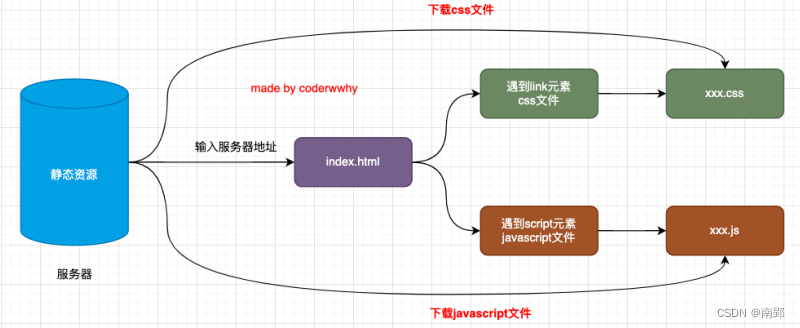
1. 浏览器渲染流程
浏览器的内核
我们经常说的浏览器内核指的是浏览器的排版引擎：
- 排版引擎（layout engine），也称为浏览器引擎（browser engine）、页面渲染引擎（rendering engine）或样版引擎。
- 也就是一个网页下载下来后，就是由我们的渲染引擎来帮助我们解析的。
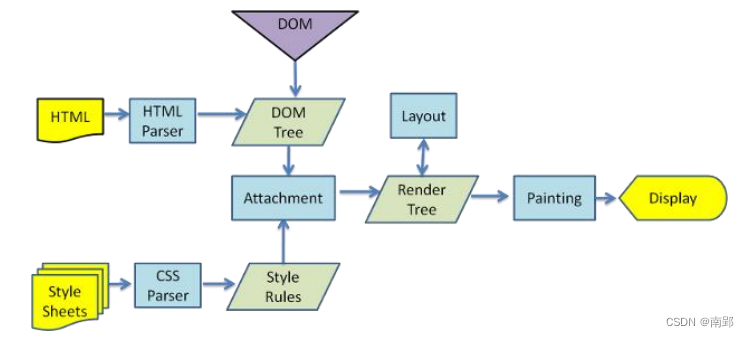
1.1 HTML 解析过程
- 因为默认情况下服务器会给浏览器返回index.html文件，所以解析HTML是所有步骤的开始
- 解析HTML，会==构建 DOM Tree==
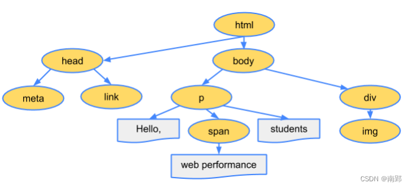
1.2 CSS 解析过程
- 在解析的过程中，如果遇到 CSS 的 link 元素，那么会由浏览器负责下载对应的 CSS 文件：
- 注意：下载 CSS 文件是不会影响 DOM 的解析的；
- 浏览器下载完 CSS 文件后，就会对 CSS 文件进行解析，解析出对应的规则树：
- 我们可以称之为 ==CSSOM==（CSS Object Model，CSS对象模型）；
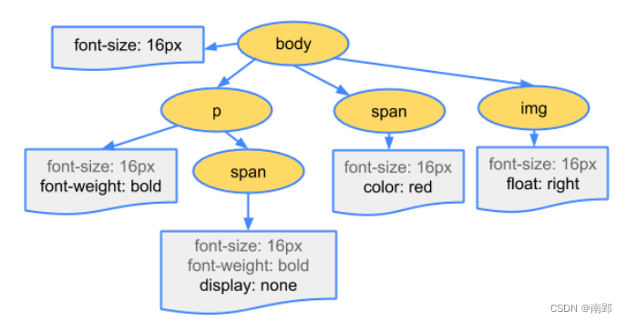
- 我们可以称之为 ==CSSOM==（CSS Object Model，CSS对象模型）；
1.3 构建 Render Tree
当有了 DOM Tree 和 CSSOM Tree 后，就可以两个结合来构建==Render Tree==了
注意：
- link 元素不会阻塞 DOM Tree 的构建过程，但是会阻塞 Render Tree 的构建过程
- 这是因为 Render Tree 在构建时，需要对应的 CSSOM Tree；
- Render Tree 和 DOM Tree 并不是一一对应的关系，比如对于
display = none的元素，压根不会出现在 render tree 中；
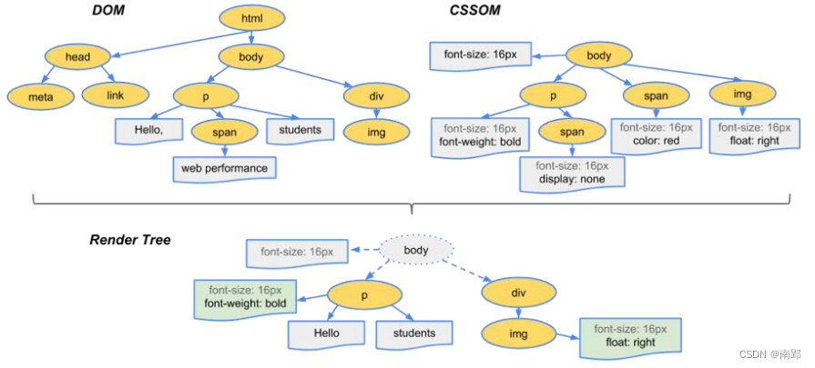
1.4 布局（layout）和绘制（paint）
- 第四步是在渲染树（Render Tree）上运行==布局==以计算每个节点的几何体
- 渲染树会表示显示哪些节点以及其他样式，但是不表示每个节点的尺寸、位置等信息；
- 布局是确定呈现树中所有节点的宽度、高度和位置信息；
- 第五步是将每个节点==绘制==到屏幕上
- 在绘制阶段，浏览器将布局阶段计算的每个frame转为屏幕上实际的像素点
- 包括将元素的可见部分进行绘制，比如文本、颜色、边框、阴影、替换元素（比如img）
2. 回流和重绘解析
==回流（reflow）：==
- 第一次确定节点的大小和位置，称之为布局（layout）。
- 之后对节点的大小、位置修改重新计算称之为回流。
==什么情况下引起回流呢？ == - 比如DOM结构发生改变（添加新的节点或者移除节点）；
- 比如改变了布局（修改了width、height、padding、font-size等值）
- 比如窗口resize（修改了窗口的尺寸等）
- 比如调用getComputedStyle方法获取尺寸、位置信息；
==重绘（repaint）：==
- 第一次渲染内容称之为绘制（paint）。
- 之后重新渲染称之为重绘。
==什么情况下会引起重绘呢？== - 比如修改背景色、文字颜色、边框颜色、样式等；
回流一定会引起重绘, 很消耗性能，开发中要尽量避免发送回流：
- 修改样式时尽量一次性修改
- 比如通过cssText修改，比如通过添加class修改
- 尽量避免频繁的操作DOM
- 我们可以在一个 DocumentFragment 或者父元素中将要操作的DOM操作完成，再一次性的操作；
- 尽量避免通过getComputedStyle获取尺寸、位置等信 息；
- 对某些元素使用
position=absolute或者fixed- 并不是不会引起回流，而是开销相对较小，不会对其他元素造成影响
3. 合成和性能优化
绘制的过程，可以将布局后的元素绘制到多个合成图层中。这是浏览器的一种优化手段
- 默认情况下，标准流中的内容都是被绘制在同一个图层中
- 某些特殊的CSS属性, 会生成新的合成图层，并且新的图层可以利用GPU来加速绘制（因为每个合成层都是单独渲染的）
- 分层确实可以提高性能，但是它以内存管理为代价，因此不应作为 web 性能优化策略的一部分过度使用。
可以形成新的合成层的属性：
- 3D transforms
- video、canvas、iframe
- opacity 动画转换时
- position: fixed
- will-change：一个实验性的属性，提前告诉浏览器元素可能发生哪些变化；
- animation 或 transition 设置了opacity、transform；
4. script 元素和页面解析的关系
浏览器在解析 HTML 的过程中，遇到了 script 元素会停止继续构建 DOM 树，首先下载 JavaScript 代码，并且执行 JavaScript 的脚本； 只有等到 JavaScript 脚本执行结束后，才会继续解析 HTML，构建 DOM 树；
这是因为 JavaScript 的作用之一就是操作 DOM，并且可以修改 DOM；如果我们等到 DOM 树构建完成并且渲染再执行 JavaScript，会造成严重的回流和重绘，影响页面的性能
但是这个也往往会带来新的问题，在目前的开发模式中（比如Vue、React），脚本往往比HTML页面更“重”，处理时间需要更长；所以会造成页面的解析阻塞，在脚本下载、执行完成之前，用户在界面上什么都看不到
4.1 defer 属性
告诉浏览器不要等待脚本下载，而继续解析HTML，构建DOM Tree
如果脚本提前下载好了，它会等待DOM Tree构建完成后，DOMContentLoaded事件之前先执行defer中的代码
多个带defer的脚本是可以保持正确的顺序执行的
从性能的角度最好放到head中
defer对于非外部引用的script元素，无效
4.2 async 属性
- async 属性也能让脚本不阻塞页面（与 defer 类似）；
- async 脚本不能保证顺序，它是独立下载、独立运行，不会等待其他脚本；
- async 不能保证在DOMContentLoaded之前或者之后执行
- defer 通常用于需要在文档解析后操作DOM的JavaScript代码，并且对多个script文件有顺序要求的；
- async 通常用于独立的脚本，对其他脚本，甚至DOM没有依赖的
5. 总结
浏览器输入一个URL到页面显示的过程：
- 首先通过DNS服务器进行域名解析，解析出对应的IP地址，然后从ip地址对应的主机发送http请求，获取对应的静态资源
- 默认情况服务器会返回index.html文件
- 然后浏览器内核开始解析HTML
- 首先会解析对应的html 生成DOM Tree
- 解析过程中，如果遇到css的link标签则会下载对应的css文件（下载css文件和生成DOM树同时进行）
- 下载完对应的css文件后会进行css解析 生成CSSOM( CSS object model)
- 当DOM Tree和CSSTree都解析完成之后 会进行合并用来生成Render Tree(渲染树)
- 初步生成的渲染树会显示节点以及部分样式，但是并不表示每个节点的尺寸、位置信息。于是进行布局来生成渲染树中节点的宽度、高度、位置信息
- 经过Layout之后，浏览器内核将布局时的每个frame转为屏幕上的每个像素点、将每个节点绘制到屏幕上
二、JavaScript 的运行原理
1. 深入 V8 引擎原理
浏览器内核是由两部分组成的，以webkit为例：
- WebCore：负责HTML解析、布局、渲染等等相关的工作；
- JavaScriptCore：解析、执行JavaScript代码；
另外一个强大的JavaScript引擎就是V8引擎
1.1 V8 引擎的架构
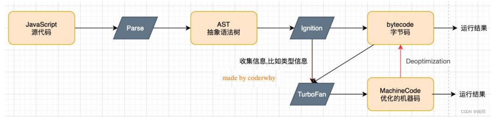
- Parse 模块会将JavaScript代码转换成AST（抽象语法树），这是因为解释器并不直接认识JavaScript代码；
- Ignition 是一个解释器，会将AST转换成ByteCode（字节码）
- 同时会收集TurboFan优化所需要的信息（比如函数参数的类型信息，有了类型才能进行真实的运算）；
- 如果函数只调用一次，Ignition会解释执行ByteCode；
- TurboFan 是一个编译器，可以将字节码编译为CPU可以直接执行的机器码；
- 如果一个函数被多次调用，那么就会被标记为热点函数，那么就会经过 TurboFan 转换成优化的机器码，提高代码的执行性能；
- 但是，机器码实际上也会被还原为ByteCode，这是因为如果后续执行函数的过程中，类型发生了变化（比如sum函数原来执行的是number类型，后来执行变成了string类型），之前优化的机器码并不能正确的处理运算，就会逆向的转换成字节码
在将JavaScript代码转换成AST（抽象语法树）的过程中：
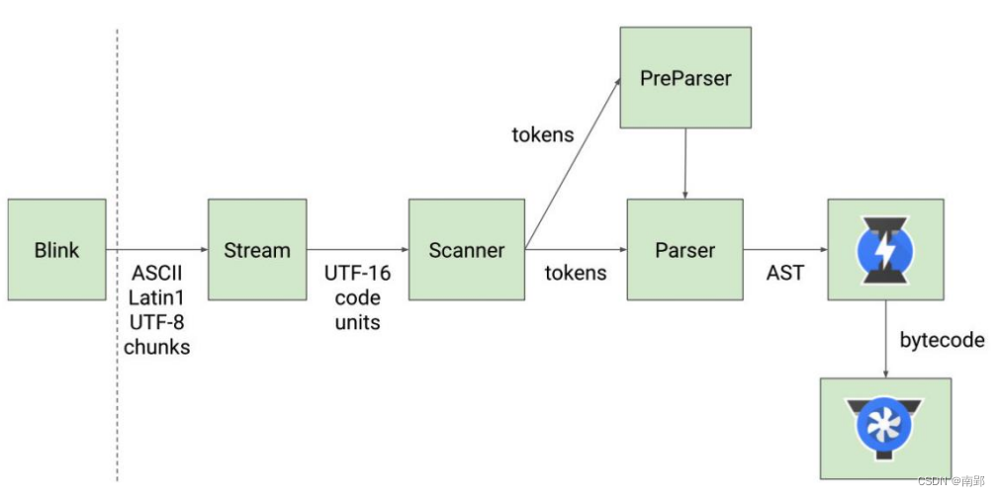
词法分析：
- 将对应的每一行的代码的字节流分解成有意义的代码块，代码块被称为词法单元
- token是记号化（tokenization）的缩写
- 词法分析器，也叫扫描器（scanner）
语法分析：
- 将对应的tokens分析成一个元素逐级嵌套的树， 这个树称之为抽象语法树
- 语法分析器也可以称之为 parser
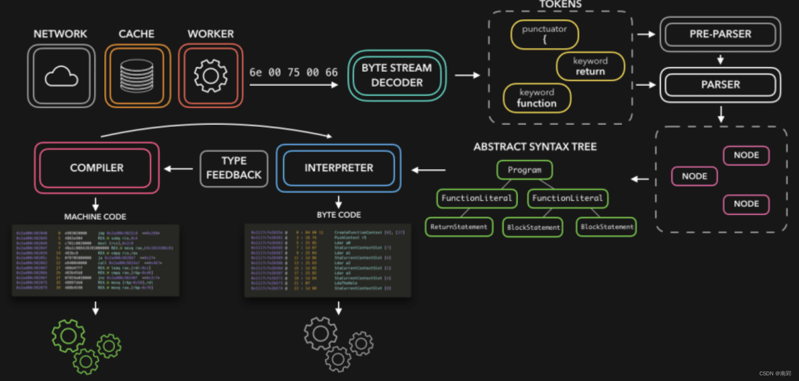
2. 深入 JS 执行原理
2.1 执行全局代码
2.1.1 初始化全局对象
js引擎在执行代码之前，会在堆内存中创建一个全局对象：Global Object（GO）
- 该对象所有的作用域都可以访问；
- 里面会包含
Date、Array、String、Number、setTimeout、setInterval等等； - 其中还有一个
window属性指向自己
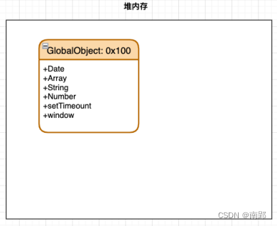
2.1.2 执行上下文
js引擎内部有一个执行上下文栈（Execution Context Stack，简称ECS），它是用于执行代码的调用栈。
全局的代码块为了执行会构建一个 Global Execution Context（GEC）； GEC会被放入到ECS中执行，其中内容包括：
- ==第一部分：==在代码执行前，在parser转成AST的过程中，会将全局定义的变量、函数等加入到Global Object中，但是并不会赋值
- 这个过程也称之为变量的作用域提升（hoisting）
- ==第二部分：==在代码执行中，对变量赋值，或者执行其他的函数
2.1.3 认识VO对象
每一个执行上下文会关联一个VO（Variable Object，变量对象），变量和函数声明会被添加到这个VO对象中。
当全局代码被执行的时候，VO就是GO对象
全局代码执行过程（执行前）的内存示意图：
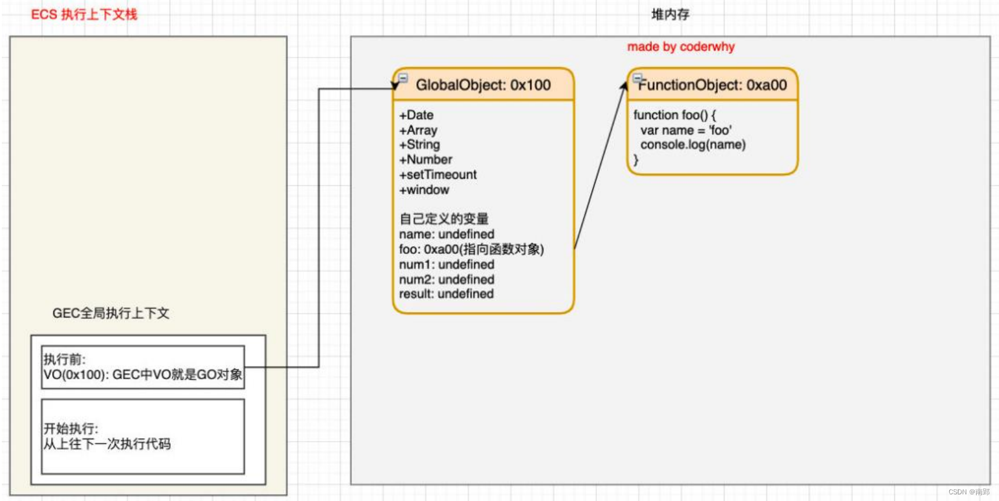
只有·会额外创建一个对象，obj、var bar = function{}这些在此阶段都视作变量
全局代码执行过程（执行后）的内存示意图：
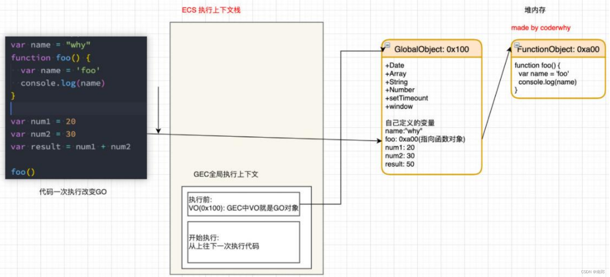
2.2 执行函数代码
在执行的过程中执行到一个函数时，就会根据函数体创建一个函数执行上下文（Functional Execution Context，简称FEC）， 并且压入到EC Stack中。
因为每个执行上下文都会关联一个VO，那么函数执行上下文关联的VO是什么呢？
- 当进入一个函数执行上下文时，会创建一个AO对象（Activation Object）；
- 这个AO对象会使用
arguments作为初始化，并且初始值是传入的参数； - 这个AO对象会作为执行上下文的VO来存放变量的初始化
函数的执行过程（执行前）的内存示意图：
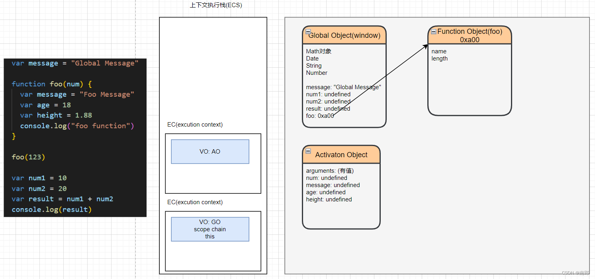
函数的执行过程（执行）的内存示意图：
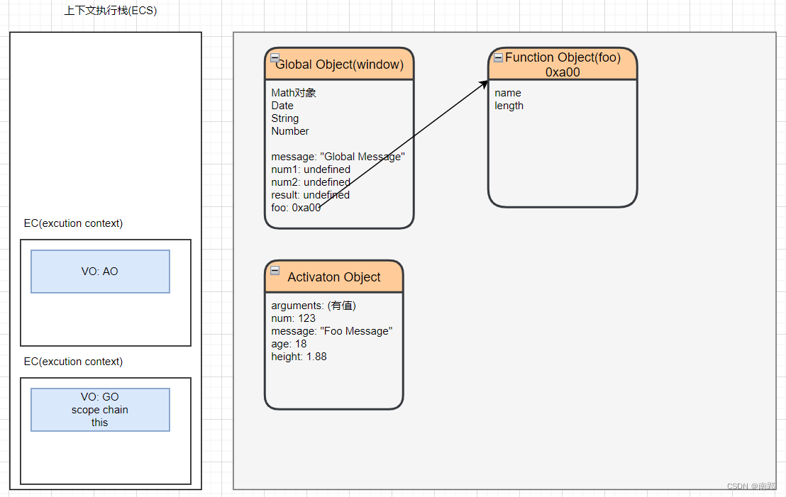
函数代码多次调用
foo第一次执行123：
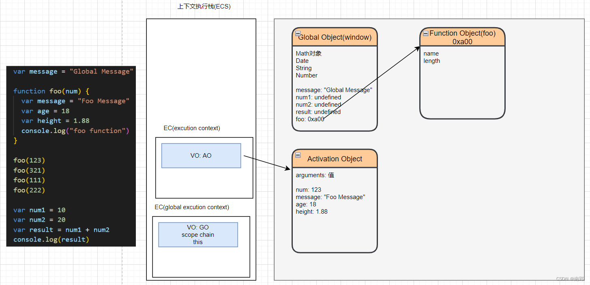foo第二次执行321：
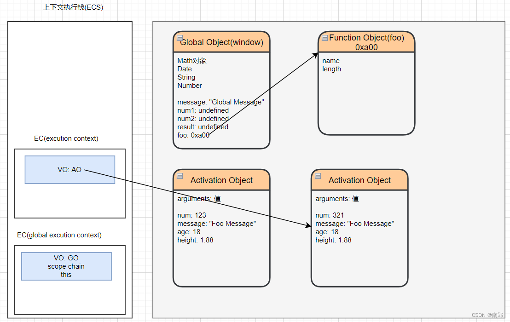
函数代码相互调用
foo和bar函数执行：
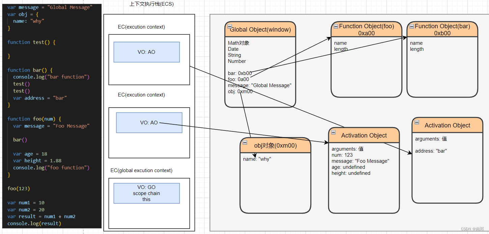bar函数执行完毕：
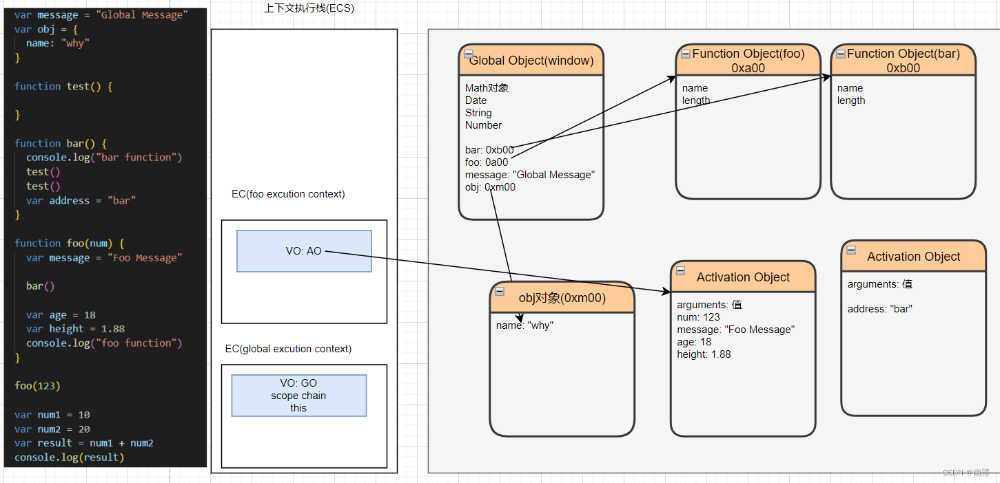foo函数执行完毕：
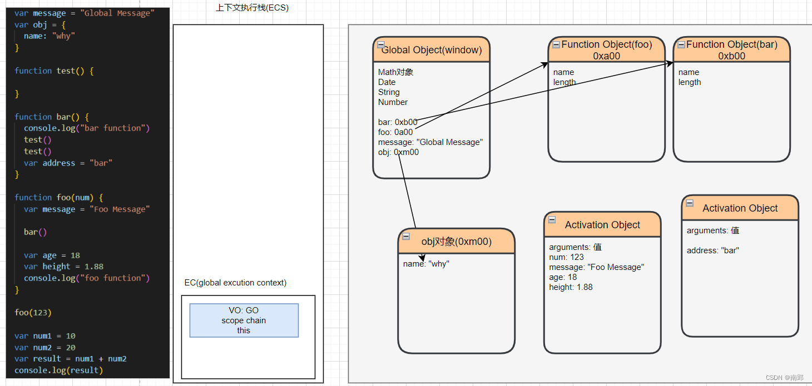
2.3 作用域、作用域链
当进入到一个执行上下文时，执行上下文也会关联一个作用域链（Scope Chain）
- 作用域链是一个对象列表，用于变量标识符的求值；
- 当进入一个执行上下文时，这个作用域链被创建，并且根据代码类型，添加一系列的对象；
函数变量的查找过程
函数有自己的message
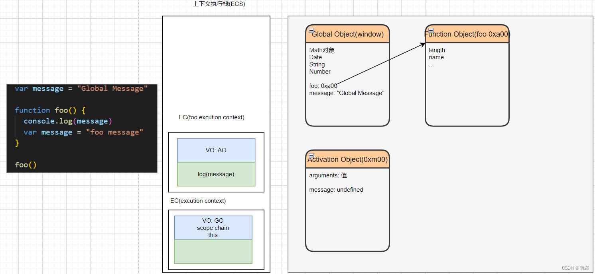函数没有自己的message
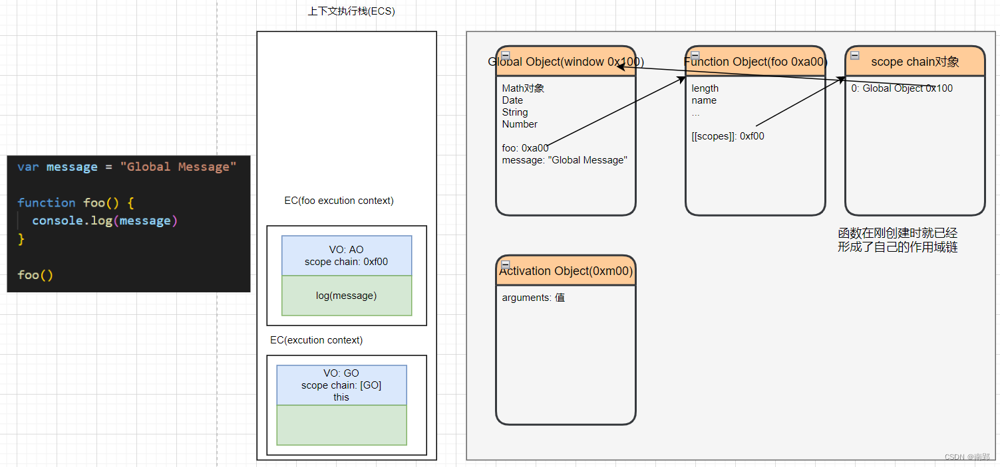
var message = "Global Message"
function foo() {
console.log(message)
}
foo()
var obj = {
name: "obj",
bar: function () {
var message = "bar message"
foo()
}
}
obj.bar() // Global Message 函数在刚创建时就已经形成了自己的作用域链，向上查找时为window函数代码多层嵌套
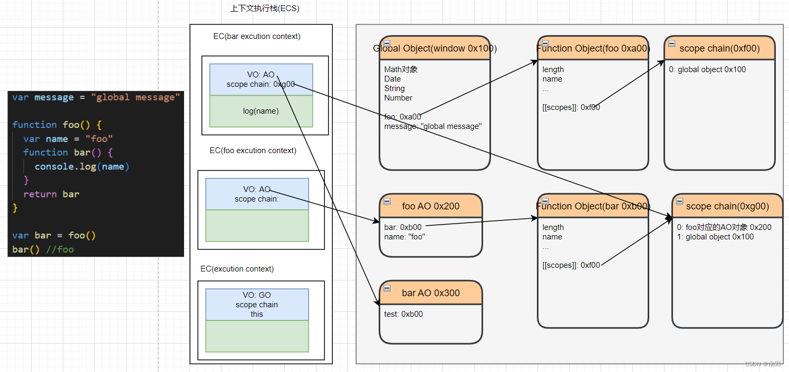
面试题
var n = 100
function foo1() {
console.log(n) //100 作用域链在定义时已经形成
}
function foo2() {
var n = 200
console.log(n) // 200
foo1()
}
foo2()var n = 100
function foo() {
console.log(n) // undefined
return
var n = 200 // 已经定义
}
foo()三、JS 的内存管理和闭包
1. 内存管理的理解
内存的管理都会有如下的生命周期：
第一步：分配申请你需要的内存（申请）；
第二步：使用分配的内存（存放一些东西，比如对象等）；
第三步：不需要使用时，对其进行释放
JS对于原始数据类型内存的分配会在执行时， 直接在栈空间进行分配；
JS对于复杂数据类型内存的分配会在堆内存中开辟一块空间，并且将这块空间的指针返回值 变量引用；
2. 垃圾回收机制GC算法
2.1 引用计数（了解）
- 当一个对象有一个引用指向它时，那么这个对象的引用就+1；
- 当一个对象的引用为0时，这个对象就可以被销毁掉；
这个算法有一个很大的弊端就是会产生循环引用
2.2 标记清除(可达性)
- 标记清除的核心思路是可达性
- 这个算法是设置一个根对象，垃圾回收器会定期从这个根开始，找所有从根开始有引用到的对象，对于那些没有引用到的对象，就认为是不可用的对象
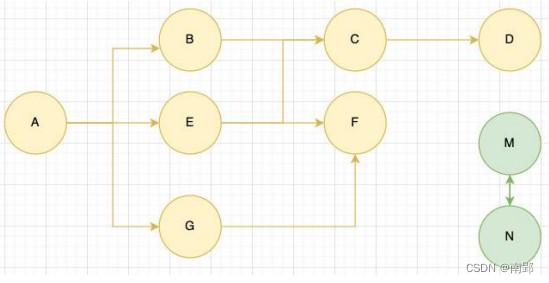
2.3 其他算法补充
V8引擎为了进行更好的优化，它在算法的实现细节上也结合一些其他的算法：
- 标记整理
- 回收期间同时会将保留的存储对象搬运汇集到连续的内存空间，从而整合空闲空间，避免内存碎片化
- 分带处理—— 对象被分成两组：“新的”和“旧的”
- 许多对象出现，完成它们的工作并很快死去，它们可以很快被清理
- 那些长期存活的对象会变得“老旧”，而且被检查的频次也会减少
- 增量收集
- 如果有许多对象，并且我们试图一次遍历并标记整个对象集，则可能需要一些时间，并在执行过程中带来明显的延迟。
- 所以引擎试图将垃圾收集工作分成几部分逐一进行处理，这样会有许多微小的延迟而不是一个大的延迟
- 闲时收集
- 垃圾收集器只会在 CPU 空闲时尝试运行，以减少可能对代码执行的影响
3. 闭包的概念理解
一个函数和对其周围状态（词法环境）的引用捆绑在一起，这样的组合就是闭包（closure）
- 一个普通的函数function，如果它可以访问外层作用域的自由变量，那么这个函数和周围环境就是一个闭包；
- 从广义的角度来说：JavaScript中的函数都是闭包
- 从狭义的角度来说：JavaScript中一个函数，如果访问了外层作用域的变量，那么它是一个闭包
3.1 闭包的执行过程
第一次调用createAdder
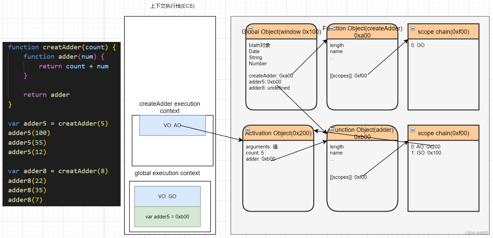执行adder5
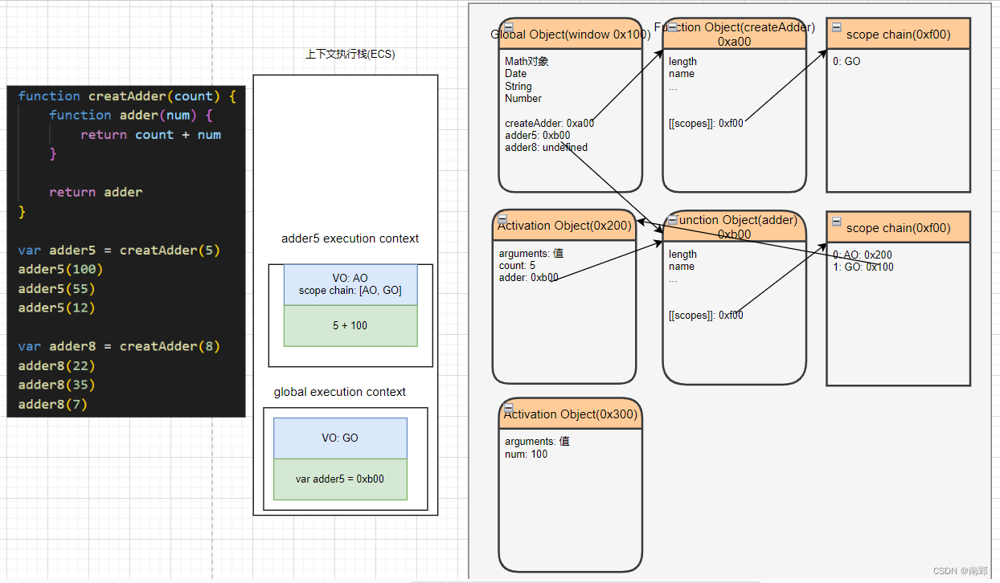adder5执行完成
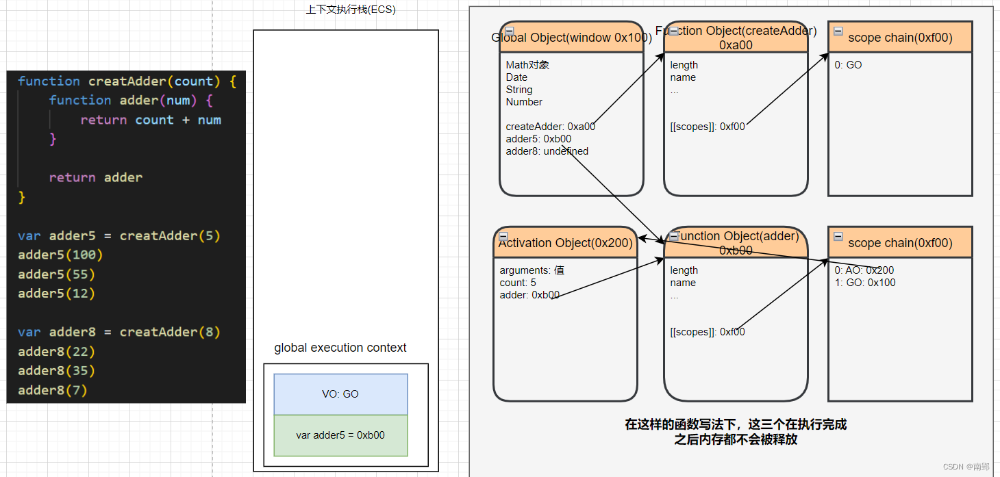第二次调用createAdder
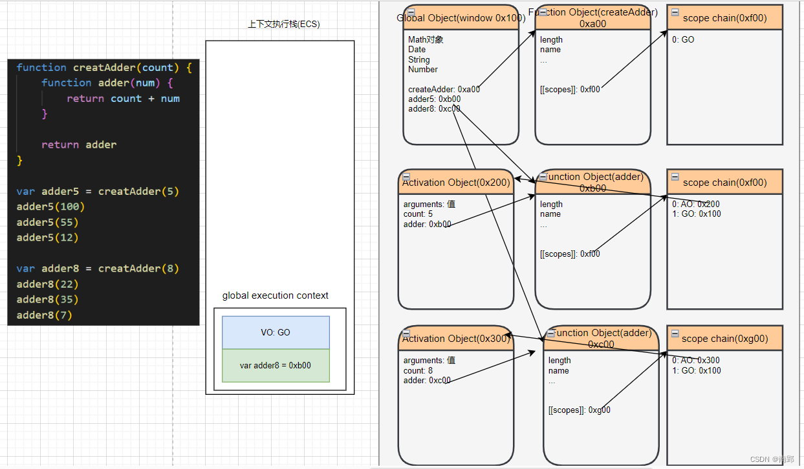
3.2 闭包的内存泄漏和释放
- 在上面的案例中，如果后续我们不再使用
adder8函数了，那么该函数对象应该要被销毁掉，并且其引用着的父作用域AO也应该被销毁掉； - 但是目前因为在全局作用域下
adder8变量对0xb00的函数对象有引用，而0xb00的作用域中AO（0x200）有引用，所以最终会造成这些内存都是无法被释放的； - 所以我们经常说的闭包会造成内存泄露，其实就是刚才的引用链中的所有对象都是无法释放的；
此时，将 adder8 = null 即可释放内存
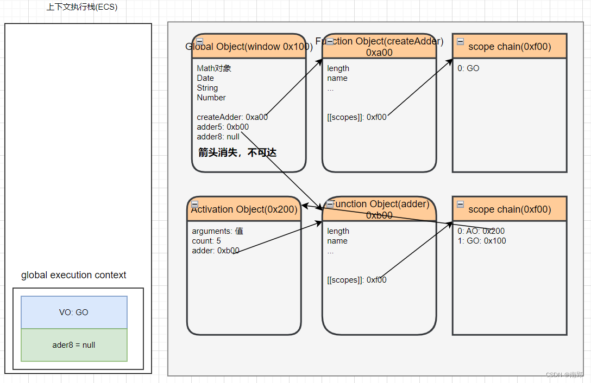
一、函数增强
1. 函数对象的属性和 arguments
JavaScript中函数也是一个对象，那么对象中就可以有属性和方法：
name：一个函数的名字我们可以通过name来访问length：属性length用于返回函数参数的个数- 注意：rest参数是不参与参数的个数的
1.1 arguments 转数组
arguments 是一个对应于传递给函数的参数的类数组(array-like)对象
array-like意味着它不是一个数组类型，而是一个对象类型：
- 但是它却拥有数组的一些特性，比如说length，比如可以通过index索引来访问；
- 但是它却没有数组的一些方法，比如filter、map等；
在开发中，我们经常需要将arguments转成Array，以便使用数组的一些特性。
// 2.1 普通方式
var newArguments = []
for (var arg of arguments) {
newArguments.push(arg)
}
console.log(newArguments);
// 2.2 ES6方式
var newArgs1 = Array.from(arguments)
console.log(newArgs1);
var newArgs2 = [...arguments]
console.log(newArgs2);
// 2.3 slice方法
var newArgs3 = [].slice.apply(arguments)
console.log(newArgs3);
var names = ['abd', 'bca', 'nba']
var newNames = names.slice() //this指向names，slice使用for遍历内部，截取数
console.log(newNames);// 原数组
}==PS：==
- 箭头函数不绑定arguments
1.2 剩余 rest 参数
剩余参数必须放到最后一个位置，否则会报错
function foo(num1, num2, ...args) {
console.log(num1, num2)
comsole.log(args)
}
function bar(...args) {}和arguments的区别：
- 剩余参数只包含那些没有对应形参的实参，而 arguments 对象包含了传给函数的所有实参；
- arguments对象不是一个真正的数组，而rest参数是一个真正的数组，可以进行数组的所有操作（ES6新增）
2. 纯函数
2.1 纯函数的概念
- 确定的输入，一定会产生确定的输出；
- 函数在执行过程中，不能产生副作用
- 副作用：在执行一个函数时，除了返回函数值之外，还对调用函数产生了附加的影响， 比如修改了全局变量，修改参数或者改变外部的存储
举例：
slice：slice截取数组时不会对原数组进行任何操作，而是生成一个新的数组；（纯函数）splice：splice截取数组, 会返回一个新的数组，也会对原数组进行修改
2.2 作用和优势
- 在写的时候，保证了函数的纯度，只是单纯实现自己的业务逻辑即可，不需要关心传入的内容是如何获得的或者依赖其他的外部变量是否已经发生了修改；
- 在用的时候，你确定你的输入内容不会被任意篡改，并且自己确定的输入，一定会有确定的输出
3. 柯里化
3.1 柯里化的概念
把接收多个参数的函数，变成接受一个单一参数（最初函数的第一个参数）的函数，并且返回一个函数去处理剩余的参数
==柯里化的优势:==
- 函数的职责单一
function foo(x) {
x = x + 2
return function (y) {
y = y * 2
return function (z) {
z = z ** 2
return x + y + z
}
}
}
foo(10)(20)(30)- 函数的参数复用
creatAdder函数要求我们传入一个count
在之后使用返回的函数时，我们不需要再继续传入count
function creatAdder(count) {
return function(num) {
return count + num
}
}
var adder5 = creatAdder(5)
adder5(100)
adder5(55)
var adder8 = creatAdder(8)
adder8(22)
adder8(35)3.2 自动柯里化函数
function foo(x, y, z) {
return x + y + z
}
function hyCurrying(fn) {
function curryFn(...args) {
//两类操作
//1.继续返回新的函数，继续接受参数
//2.直接执行fn
if (args.length >= fn.length) {
return fn(...args)//展开args,由数组展为单个数字
// return 需要将fn执行后的结果返回出去
} else {
return function (...newArgs) {
return curryFn(... args.concat(newArgs))
}
}
}
return curryFn
}
var fooCurry = hyCurrying(foo)// fooCurry相当于curryFn
var result = fooCurry(10)(20)(30)
console.log(result);4. 组合函数
将多个函数组合起来，自动依次调用
function double(num) {
return num * 2
}
function pow(num) {
return num ** 2
}
function compFn(...fns) {
//1.边界场景
var length = fns.length
for (var i = 0; i < length; i++) {
if (typeof fns[i] !== 'function') {
throw new Error('index position ${i} must be function')
}
}
return function (...args) {
var result = fns[0].apply(this, args)
for (var i = 1; i < length; i++) {
result = fns[i].apply(this, [result])// 依次执行多个函数
}
return result
}
}
var newFn = compFn(double, pow, console.log)
newFn(100)5. 额外知识
5.1 with 语句
with语句 扩展一个语句的作用域链
var obj = {
name: 'why',
age: 18
}
with(obj) {
console.log(name)
console.log(age)
}不建议使用with语句，因为它可能是混淆错误和兼容性问题的根源
5.2 eval 函数
内建函数 eval 允许执行一个代码字符串
- eval是一个特殊的函数，它可以将传入的字符串当做JavaScript代码来运行；
- eval会将最后一句执行语句的结果，作为返回值
不建议在开发中使用eval
5.3 严格模式
严格模式对正常的JavaScript语义进行了一些限制：
- 严格模式通过 抛出错误 来消除一些原有的 静默（silent）错误；
- 严格模式让JS引擎在执行代码时可以进行更多的优化（不需要对一些特殊的语法进行处理）；
- 严格模式禁用了在ECMAScript未来版本中可能会定义的一些语法；
开启严格模式
"use strict"
- 支持在js文件中开启严格模式
- 支持对某一个函数开启严格模式
严格模式的限制
"use strict"
//1.无法意外的创建全局变量
function foo() {
message = "Hello World"
}
foo()
console.log(message)
//2.发现静默错误
//3.试图删除不可删除的属性会报错
var obj = {
name: "why"
}
Object.defineProperty(obj, "name", {
writable: false,// 不可写
configurable: false
})
obj.name = "kobe"
delete obj.name
//3.函数参数名称不能相同
function foo(num, num) {}
// 4.不允许0的八进制语法
console.log(0o123)
// 5.不允许使用with
// 6.eval函数不能为上层创建变量
eval(`var message = "Hello World"`)
console.log(message)
// 7.严格模式下, this不会默认转成对象类型
function foo() {
console.log(this)
}
foo.apply("abc")
foo.apply(123)
foo.apply(undefined)
foo.apply(null)
// 独立函数执行默认模式下, 绑定window对象
// 在严格模式下, 不绑定全局对象而是undefined
foo()二、对象增强
1. 对属性操作的控制
通过属性描述符可以精准的添加或修改对象的属性Object.defineProperty(obj, prop, descriptor)
可接收三个参数：
- obj 要定义属性的对象；
- prop 要定义或修改的属性的名称或 Symbol；
- descriptor 要定义或修改的属性描述符；
返回值： 被传递给函数的对象。
1.1 数据属性描述符
数据数据描述符有如下四个特性：
configurable：表示属性可以通过delete删除属性，是否可以修改它的特性，或者是否可以将它修改为存取属性描述符；- 当我们直接在一个对象上定义某个属性时，这个属性的configurable为true；
- 当我们通过属性描述符定义一个属性时，这个属性的configurable默认为false；
enumerable：表示属性是否可以通过遍历for-in或者Object.keys()返回该属性；- 当我们直接在一个对象上定义某个属性时，这个属性的enumerable为true；
- 当我们通过属性描述符定义一个属性时，这个属性的enumerable默认为false；
writable：表示是否可以修改属性的值；- 当我们直接在一个对象上定义某个属性时，这个属性的writable为true；
- 当我们通过属性描述符定义一个属性时，这个属性的writable默认为false；
value：属性的value值，读取属性时会返回该值，修改属性时，会对其进行修改；- 默认情况下这个值是undefined；
var obj = {
name: 'why',
age: 18
}Object.defineProperty(obj, 'name', {
configurable: false,//不可删除
enumerable: false,//不可遍历
writable: false,//不可写
value: 'codewhy'//name = 'codewhy'
})
delete obj.name
console.log(obj.name);//codewhy
Object.defineProperty(obj, 'address', {})// 这样添加的属性默认不可删除
delete obj.address
console.log(obj.address);//undefined
console.log(Object.keys(obj));//age
obj.name = 'kobe'
console.log(obj.name);//codewhy1.2 存储属性描述符
configurable：表示属性是否可以通过delete删除属性，是否可以修改它的特性，或者是否可以将它修改为存取属性描述符；- 和数据属性描述符是一致的；
- 当我们直接在一个对象上定义某个属性时，这个属性的configurable为true；
- 当我们通过属性描述符定义一个属性时，这个属性的configurable默认为false；
enumerable：表示属性是否可以通过for-in或者Object.keys()返回该属性；- 和数据属性描述符是一致的；
- 当我们直接在一个对象上定义某个属性时，这个属性的enumerable为true；
- 当我们通过属性描述符定义一个属性时，这个属性的enumerable默认为false；
get：获取属性时会执行的函数。默认为undefinedset：设置属性时会执行的函数。默认为undefined
var obj = {
name: 'why'
}
var _name = ''
Object.defineProperty(obj, 'name', {
configurable: true,
enumerable: false,
set: function (value) {
console.log('set方法被调用了', value);
_name = value
},
get: function () {
console.log('get方法被调用了');
return _name // 不写的话默认undefined
}
})
obj.name = 'kobe'
obj.name = 'james'
obj.name = 'codewhy'
console.log(obj.name);
// set方法被调用了 kobe
// set方法被调用了 james
// set方法被调用了 codewhy
// get方法被调用了
// codewhy1.3 定义多个属性描述符
var obj = {
name: 'why',
age: 18,
height: 1.88
}
Object.defineProperties(obj, {
name: {
configurable: false,
enumerable: false,
writable: false
},
age: {
},
height: {
}
})2. 对象方法补充
获取对象的属性描述符：
Object.getOwnPropertyDescriptor(obj, "name")Object.getOwnPropertyDescriptors(obj)
禁止对象扩展新属性：
Object.preventExtensions(obj)- 给一个对象添加新的属性会失败（在严格模式下会报错）；
密封对象，不允许配置和删除属性：
Object.seal(obj)- 实际是调用preventExtensions
- 并且将现有属性的configurable:false
冻结对象，不允许修改现有属性：
Object.freeze(obj)- 实际上是调用seal
- 并且将现有属性的writable: false
三、ES5 实现继承
1. 原型的理解
1.1 对象的原型
JavaScript当中每个对象都有一个特殊的内置属性 prototype（隐式原型），这个特殊的对象可以指向另外一个对象。
获取对象原型：
obj.__proto__（是早期浏览器自己添加的，存在一定的兼容性问题）
Object.getPrototypeOf(obj)
==作用==：在当前对象查找某一个属性时, 如果找不到, 会访问对象内置属性指向的对象上的属性
1.2 函数的原型
任何一个函数（非箭头函数），都有自己的prototype 属性（显式原型）
foo.prototype（此属性是函数独有的，对象没有）
==作用：==
- 当通过 new 操作符调用构造函数时，创建一个新的对象
- 这个新的对象的隐式原型会指向这个函数的显式原型
obj.__proto__ = F.prototype
1.2.1 函数原型上的constructor属性
默认情况下原型上都会添加一个属性叫做constructor，这个constructor指向当前的函数对象
console.log(Person.prototype.constructor === Person);//true
console.log(Person.prototype.constructor.name);//'Person'1.2.2 构造函数创建对象的内存表现
function Person(name, age) {
this.name = name;
this.age = age;
}
Person.prototype.running = function () {
console.log('running~');
} // 重复的函数放到Person.prototype的对象上
var p1 = new Person('why', 18)
var p2 = new Person('kobe', 30)
Person.prototype.address = '中国'
p1.__proto__.info = '中国很美丽'
p1.height = 1.88
p2.isAdmin = true
p1.address = '广州市'//address不会更改，会直接在p1中增加address属性创建对象的内存表现
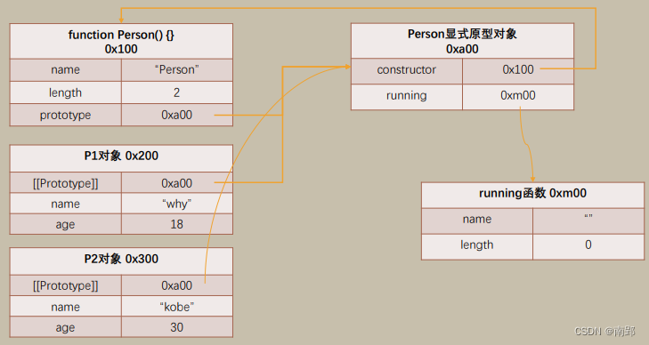
新增属性
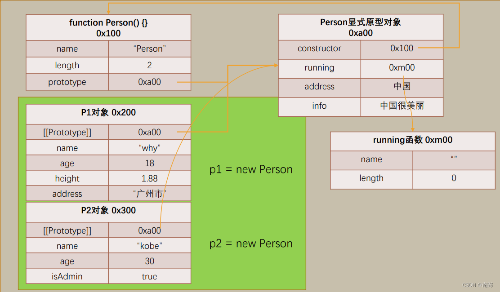
1.2.3 重写显式原型
如果我们需要在原型上添加过多的属性，通常我们会重写整个原型对象：
function Person() {}
Person.prototype = {
message: 'Hello world',
info: { name: '哈哈哈', age: 30 },
running: function () { },
eating: function () { },
constructor: Person
}
Object.defineProperty(Person.prototype, "constructor", {
enumerable: false,
configurable: true,
writable: true,
value: Person
}) // 使constructor特性与原生保持一致2. ES5 中的继承
面向对象有三大特性：封装、继承、多态
- ==封装==：我们前面将属性和方法封装到一个类中，可以称之为封装的过程
- ==继承==：继承可以帮助我们将重复的代码和逻辑抽取到父类中，子类只需要直接继承过来使用即可。也是多态的前提
- ==多态==：不同的对象在执行时表现出不同的形态
2.1 原型链的概念
从一个对象上获取属性，如果在当前对象中没有获取到就会去它的原型上面获取：
var obj = {
name: 'why',
age: 18
}
obj.__proto__ = {
} // 在__proto__上创建了对象
obj.__proto__.__proto__ = {
}
obj.__proto__.__proto__.__proto__ = {
address: "北京市"
}
console.log(obj.address);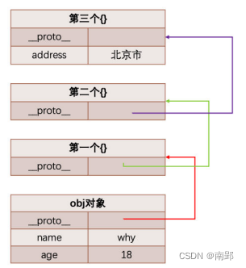
原型链的尽头
什么地方是原型链的尽头呢？我们发现第三个对象的__proto__是[Object: null prototype] {}（原型链的尽头）
从Object直接创建出来的对象的原型都是 [Object: null prototype] {}，是最顶层的原型
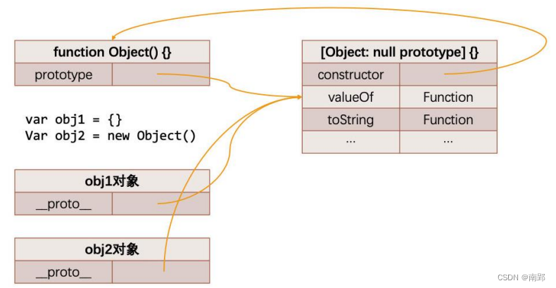
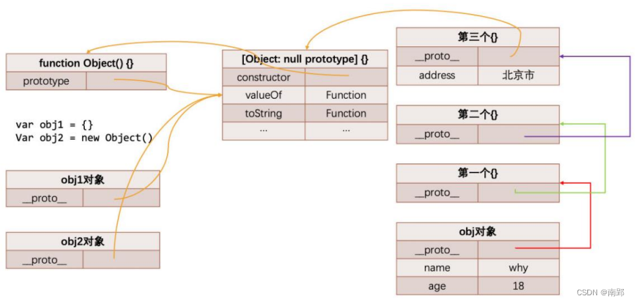
从我们上面的Object原型我们可以得出一个结论：原型链最顶层的原型对象就是Object的原型对象，Object是所有类的父类
2.2 通过原型链实现继承
function Person(name, age) {
this.name = name;
this.age = age;
}
Person.prototype.running = function () {
console.log('running~');
}
Person.prototype.eating = function () {
console.log('eating~');
}
function Student(name, age, sno, score) {
Person.call(this, name, age) // 属性继承
// this.name = name;
// this.age = age;
this.sno = sno;
this.score = score;
}
var p = new Person('why', 18)
Student.prototype = p // 方法继承
Student.prototype.studying = function () {
console.log('studying~');
}
var stu1 = new Student('why', 18, 111, 100)
stu1.running()
stu1.studying()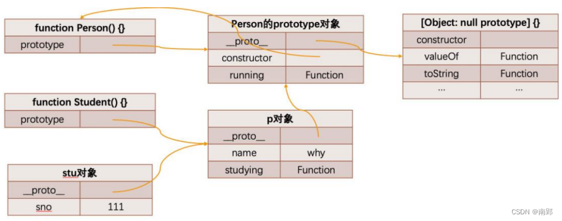
2.2.1 组合借用继承的问题
- 组合继承最大的问题就是无论在什么情况下，都会调用两次父类构造函数
- 所有的子类实例事实上会拥有两份父类的属性
- 一份在当前的实例自己里面(也就是person本身的)，另一份在子类对应的原型对象中(也就是
person.__proto__里面)
- 一份在当前的实例自己里面(也就是person本身的)，另一份在子类对应的原型对象中(也就是
2.2.2 原型式继承函数
最终的目的：student对象的原型 -> 中间对象/函数 – 对象/函数的原型 -> Person.prototype
// 之前的做法: 但是不想要这种做法
// var p = new Person()
// Student.prototype = p
// 1.
var obj = {}
Object.setPrototypeOf(obj, Person.prototype)
Student.prototype = obj
// 2.
function F() { }
F.prototype = Person.prototype
Student.prototype = new F()
// 3.
var obj = Object.create(Person.prototype)
Student.prototype = obj2.3 寄生组合式继承
创建一个封装继承过程的函数, 该函数在内部以某种方式来增强对象，最后再将这个对象返回
//创建对象
function createObject(o) {
function F() {}
F.prototype = o.prototype
return new F
}
function inherit(Subtype, Supertype) {
Subtype.prototype = createObject(Supertype)
Object.defineProperty(Subtype.prototype, 'constructor', {
enumerable: false,
configurable: true,
writable: true,
value: Subtype
})// 新建对象添加'constructor'
}
function Person() {}
function Student() {}
inherit(Student, Person)2.4 对象判断方法补充
hasOwnProperty：对象是否有某一个属于自己的属性（不是在原型上的属性）in/for in：判断某个属性是否在某个对象或者对象的原型上instanceOf：用于检测构造函数（Person、Student类）的pototype，是否出现在某个实例对象的原型链上obj.isPrototypeOf(info)：用于检测某个对象，是否出现在某个实例对象的原型链上
var obj = {
name: 'why',
age: 18
}
var info = createObject(obj)
info.address = '中国'
info.intro = '中国大好河山'
// hasOwnProperty
console.log(info.hasOwnProperty('name'));//false
console.log(info.hasOwnProperty('address'));//true
// in
console.log('name' in info);//true
console.log('address' in info);//true
// for in
for (var k in info) {
console.log(k);
}
function Student() {}
function Person() {}
inherit(Student, Person)
//instanceof
var stu = new Student()
console.log(stu instanceof Student);
console.log(stu instanceof Person);
console.log(stu instanceof Object);
console.log(stu instanceof Array);//false
//isPrototypeOf
console.log(Student.prototype.isPrototypeOf(stu));
console.log(Person.prototype.isPrototypeOf(stu));2.5 原型继承关系（重点）
- Person()作为一个函数，有prototype属性（指向Person原型对象，此
对象.__proto__为[Object: null prototype]） - Person作为一个对象，有__proto__属性（Person是Function()创建的，
Person.__proto__ === Function.prototype
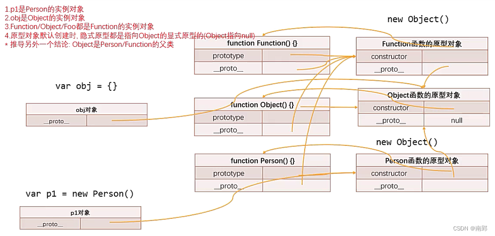
Function、Object、函数对象Person的关系
- Function/Object/Person 都是Function的实例对象
- Object是Function/Person的父类
- 函数的
__proto__都指向Function的显示原型,包括Function自己的__proto__
var obj = {}; //相当于new Object() ---> function Object(){}
function Foo() {} //相当于 new Function() ---> function Function(){}
function Person() {}
console.log(obj.__proto__ === Object.prototype);
console.log(Foo.__proto__ === Function.prototype);
console.log(Person.__proto__ === Function.prototype);
console.log(Foo.__proto__ === Person.__proto__);
console.log(Object.__proto__ === Function.prototype);
console.log(Function.__proto__ === Function.prototype);
console.log(Foo.prototype.__proto__ === Object.prototype);
console.log(Function.prototype.__proto__ === Object.prototype);
var p1 = new Person();
console.log(p1.__proto__ === Person.prototype);四、ES6 类的使用
1. class 定义类
类本质上是构造函数
class Person() {}
var Student = class {}1.1 类中的 constructor
constructor在创建对象的时候给类传递一些参数
每个类都可以有一个自己的构造函数（方法），这个方法的名称是固定的constructor；每个类只能有一个构造函数，如果包含多个构造函数，那么会抛出异常
当我们通过new操作符，操作一个类的时候会调用这个类的构造函数constructor并且执行如下操作：
- 在内存中创建一个新的对象（空对象）；
- 这个对象内部的prototype属性会被赋值为该类的prototype属性；
- 构造函数内部的this，会指向创建出来的新对象；
- 执行构造函数的内部代码（函数体代码）；
- 如果构造函数没有返回非空对象，则返回创建出来的新对象
class Person {
constructor(name, age) {
this.name = name;
this.age = age;
}
}1.2 类的实例方法
在类中创建实例方法，放在原型上，被多个实例共享
class Person {
constructor(name, age) {
this.name = name;
this.age = age;
}
running() {
console.log(this.name + ' running~');
}
eating() {
console.log(this.name + ' eating~');
}
}
console.log(Person.running);//undefined
console.log(Person.prototype.running);//可以取到1.3 类的访问器方法
类可以添加setter和getter函数
class Person {
constructor(name, age) {
this._name = name;
this.age = age;
}
set name(value) {
console.log('set了属性');
this._name = value
}
get name() {
console.log('get了属性');
return this._name
}
}
var p1 = new Person()
p1.name = 'kobe' //调用的是set name()，但不可p1.name()这样使用
console.log(p1.name);class Rectangle {
constructor(x, y, width, height) {
this.x = x;
this.y = y;
this.width = width;
this.height = height;
}
get position() {
return { x: this.x, y: this.y }
}
}
var rec = new Rectangle(1, 3, 100, 200)
console.log(rec.position);1.4 类的静态方法
静态方法通常用于定义直接使用类来执行的方法，不需要有类的实例，使用static关键字来定义
var names = ["abc", "cba", "nba", "mba"]
class Person {
constructor(name, age) {
this.name = name;
this.age = age;
}
running() { }
eating() { }
static randomPerson() {
console.log(this);//Person{}
var randomName = names[Math.floor(Math.random() * names.length)]
return new this(randomName, Math.floor(Math.random() * 100))
}
}
var p1 = new Person()
console.log(Person.randomPerson());1.5 类和构造函数的异同
class Person {}
var p = new Person("kobe", 30)
console.log(p.__proto__ === Person.prototype)//true
console.log(Person.prototype.constructor)//[class Person]
console.log(typeof Person) // function
// 不同点：class定义的类, 不能作为一个普通的函数进行调用
Person()//错误2. ES6类的继承
2.1 extends
在ES6中新增了使用extends关键字，可以方便的帮助我们实现继承
class Person {}
class Student extends Person {}2.2 super 关键字
方式一：构造方法 super()
- 一定在使用this之前以及返回对象之前先调用super
class Person {
constructor(name, age) {
this.name = name;
this.age = age;
}
}
class Person {
constructor(name, age, sno, score) {
// this.name = name;
// this.age = age;
super(name, age);
this.sno = sno;
this.score = score;
}
}方式二：实例方法super.method
调用父类函数
方式三：静态方法super.staticMethod
调用父类静态函数
class Animal {
running() {
console.log('running~');
}
eating() {
console.log('eating~');
}
static sleep() {
console.log('sleep');
}
}
class Dog extends Animal {
running() {
console.log('dog四条腿');
super.running() // 实例方法
}
static sleep() {
console.log('趴着');
super.sleep() // 静态方法
}
}2.3 继承自内置类
class HYArray extends Array {
lastItem() {
return this[this.length - 1]
}
}
var arr = new HYArray(10, 20, 30)
console.log(arr.length);
console.log(arr.lastItem());//30
Array.prototype.lastItem = function () {
return this[this.length - 1]
}2.4 类的混入 mixin
JavaScript的类只支持单继承：也就是只能有一个父类
需要多继承，则需要使用 mixin
function mixinAnimal(BaseClass) {
return class extends BaseClass {
running() {
console.log('running');
}
}
}
function mixinRunner(BaseClass) {
return class extends BaseClass {
flying() {
console.log('flying');
}
}
}
class Bird {
eating() {
console.log('eating');
}
}
var NewBird = mixinRunner(mixinAnimal(Bird));// 继承Animal和Runner类 后的新类
var bird = new NewBird();
bird.running();
bird.flying();3. babel ES6 转 ES5源码
4. 面向对象的补充
4.1 JavaScript 中的多态
不同的数据类型进行同一个操作，表现出不同的行为，就是多态的体现。
JavaScript是一定存在多态的
4.2 对象字面量的增强
字面量的增强主要包括下面几部分：
- 属性的简写
- 方法的简写
- 计算属性名
var name = 'why'
var age = 18
var key = 'address' + 'city'
var obj = {
// 属性的简写
// name: name,
name,
// age: age
age,
running: function () {
console.log(this);
},
// 方法的简写
swimming() {
console.log(this);
},
eating: () => {
console.log(this);
},
// 计算属性名
[key]: '广州市' // address city: '广州市'
}
obj.running();//obj
obj.swimming();//obj
obj.eating();//window
function foo() {
var message = 'hello world'
var info = 'my name is why'
return {
message,
info
}
}
var result = foo()
console.log(result.message, result.info);4.3 数组和对象的解构
解构：从数组或对象中方便获取数据的方法，它使我们可以将数组或对象“拆包”至一系列变量中
4.3.1 数组的解构
var names = ["abc", "cba", undefined, "nba", "mba"]
// var name1 = names[0]
// var name2 = names[1]
// var name3 = names[2]
// 1.1. 基本使用
var [n1, n2, n3] = names
console.log(n1, n2, n3);
// 1.2 按照严格顺序
var [n1, , n3] = names
console.log(n1, n3);
// 1.3 解构出部分数组
var [n1, n2, ...newArr] = names
console.log(newArr);// [undefined, "nba", "mba"]
// 1.4 解构的默认值
var [n1, n2, n3 = 'default'] = names
console.log(n1, n2, n3);4.3.2 对象的解构
var obj = { name: "why", age: 18, height: 1.88 }
// var name = obj.name
// var age = obj.age
// var height = obj.height
// 2.1. 基本使用
var { name, age, height } = obj
console.log(name, age, height);
// 2.2 顺序按对应key获取
var { height, name, age } = obj
console.log(name, age, height);
// 2.3 对变量进行重命名
var { height: wHeight, name: wName, age: wAge } = obj
console.log(wName, wAge, wHeight);
// 2.4 默认值
var {
height: wHeight,
name: wName,
age: wAge,
address: wAddress = '中国'
} = obj
console.log(wName, wAge, wHeight, wAddress);
// 2.5. 解构出部分对象
var {
name,
...newObj
} = obj
console.log(newObj)// {age: 18, height: 1.88}4.3.3 应用场景
function getPosition({ x, y }) {
console.log(x, y);
}
getPosition({ x: 10, y: 25 })
getPosition({ x: 20, y: 25 })5. 手写 apply/call/bind 函数实现
5.1 apply 和 call 的实现
- apply
thisArg代表调用apply时赋给this的值
function foo(name, age) {
console.log(this, name, age);
}
Function.prototype.hyapply = function (thisArg, otherArgs) {
// 使 thisArg 是对象
thisArg = (thisArg === null || thisArg === undefined) ? window : Object(thisArg)
thisArg.fn = this // thisArg.fn=foo
thisArg.fn(...otherArgs) // thisArg.foo() foo的this->thisArg
delete thisArg.fn
}
foo.hyapply({ name: 'why' }, ['kobe', 30])
foo.hyapply(123, ['james', 25])
foo.hyapply(null, ['james', 25])- call
Function.prototype.hycall = function (thisArg, ...otherArgs) {
// 让thisArg是对象
thisArg = (thisArg === null || thisArg === undefined) ? window : Object(thisArg)
thisArg.fn = this // thisArg.fn=foo
thisArg.fn(...otherArgs) // thisArg.foo() foo的this->thisArg
delete thisArg.fn
}
foo.hycall({ name: 'why' }, 'kobe', 30)
foo.hycall(123, 'james', 25)
foo.hycall(null, 'james', 25)5.2 apply 和 call 的封装
function foo(name, age) {
console.log(this, name, age);
}
// 封装
Function.prototype.hyexec = function (thisArg, otherArgs) {
thisArg = (thisArg === null || thisArg === undefined) ? window : Object(thisArg)
thisArg.fn = this // thisArg.fn=foo
thisArg.fn(...otherArgs) // thisArg.foo() foo的this->thisArg
delete thisArg.fn
}
// apply
Function.prototype.hyapply = function (thisArg, otherArgs) {
// execFn(thisArg, otherArgs, this)
this.hyexec(thisArg, otherArgs)
}
foo.hyapply({ name: 'why' }, ['kobe', 30])
foo.hyapply(123, ['james', 25])
foo.hyapply(null, ['james', 25])
// call
Function.prototype.hycall = function (thisArg, ...otherArgs) {
// execFn(thisArg, otherArgs, this)
this.hyexec(thisArg, otherArgs)
}
foo.hycall({ name: 'why' }, 'kobe', 30)
foo.hycall(123, 'james', 25)
foo.hycall(null, 'james', 25)5.3 bind 函数的实现
function foo(name, age, height, address) {
console.log(this, name, age, height, address);
}
Function.prototype.hybind = function (thisArg, ...otherArgs) {
thisArg = (thisArg === null || thisArg === undefined) ? window : Object(thisArg)
thisArg.fn = this //thisArg.fn = foo
return (...newArgs) => {
var allArgs = [...otherArgs, ...newArgs]
thisArg.fn(...allArgs)
}
}
var newFoo = foo.hybind({ name: 'why' }, 'kobe', 30)
newFoo(1.88, 'America') // 支持传递剩余参数一、E6 新特性
1. ECMA 新描述概念
1.1 词法环境
词法环境（Lexical Environments）是一种规范类型，用于在词法嵌套结构中定义关联的变量、函数等标识符：
- 一个词法环境是由环境记录（Environment Record）和一个外部词法环境（outer Lexical Environment）组成；
- 一个词法环境经常用于关联一个函数声明、代码块语句、try-catch语句，当它们的代码被执行时，词法环境被创建出来
在ES5之后，执行一个代码，通常会关联对应的词法环境
执行上下文会关联两种词法环境：
- LexicalEnvironment用于处理let、const声明的标识符
- VariableEnvironment用于处理var和function声明的标识符
1.2 环境记录
环境记录分为声明式环境记录和对象式环境记录
- 声明式环境记录：声明性环境记录用于定义ECMAScript语言语法元素的效果，如函数声明、变量声明和直接将标识符绑定与ECMAScript语言值关联起来的Catch子句
- 对象式环境记录：对象环境记录用于定义ECMAScript元素的效果，例如WithStatement，它将标识符绑定与某些对象的属性关联起来
1.3 新 ECMA 描述内存图
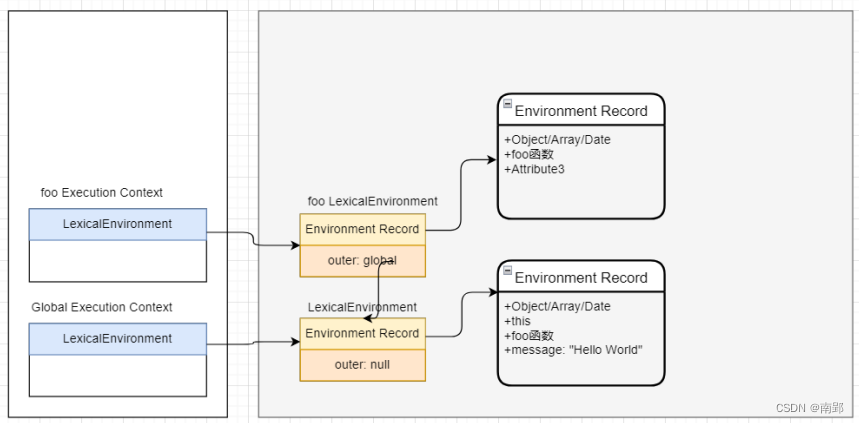
2. let、const 用法
2.1 let、const 的基本使用
◼ let关键字：从直观的角度来说，let和var是没有太大的区别的，都是用于声明一个变量
◼ const关键字：表示保存的数据一旦被赋值，就不能被修改；但是如果赋值的是引用类型，那么可以通过引用找到对应的对象，修改对象的内容
const info = {
name: 'why',
age: 18
} // 引用类型
// info = {}
info.name = 'kobe'
console.log(info);==注意：let、const 不允许重复声明变量==
2.2 let、const 没有作用域提升
let、const 变量会在执行上下文的词法环境创建出来的时候被创建，但是是不可以访问它们的，直到词法绑定被求值
(虽然被创建出来，但不能被访问，所以可以理解为作用域没有提升)
console.log(address);
const address = '广州'2.2.1 暂时性死区 TDZ
在let、const定义的标识符真正执行到声明的代码之前，是不能被访问的
从块作用域的顶部一直到变量声明完成之前，这个变量处在暂时性死区（TDZ，temporal dead zone）
ps：取决于执行顺序，不是编写代码的位置
function foo() {
console.log(message)
}
let message = 'hello'
foo() // 可以访问2.3 不会在 window 对象上添加属性
在全局通过var来声明一个变量，事实上会在window上添加一个属性；
但是let、const是不会给window上添加任何属性的
- Global environment record:
- 合成的record
- window
- 声明式环境记录对象
var message = '广州'
// console.log(window.message);
let name = 'why'
console.log(window.name);// 报错name = 'why' 存储在Script中，message = '广州' 存储在Global中
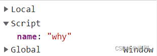
2.4 块级作用域和应用
ES5 中，JavaScript只会形成两个作用域：全局作用域和函数作用域
ES6 中，通过let、const、function、class声明的标识符是具备块级作用域的限制的
函数拥有块级作用域，但是外面依然是可以访问
{
let age = 18
const height = 1.88
class Person {}
function foo() {
console.log('foo function');
}
}
// console.log(age); 报错
// console.log(height); 报错
// const p = new Person() 报错
foo() // 可以调用2.4.1 应用
var message = "Hello World"
var age = 18
function foo() {}
let address = "广州市"
{
var height = 1.88
let title = "教师"
let info = "了解真相~"
}
...剩余代码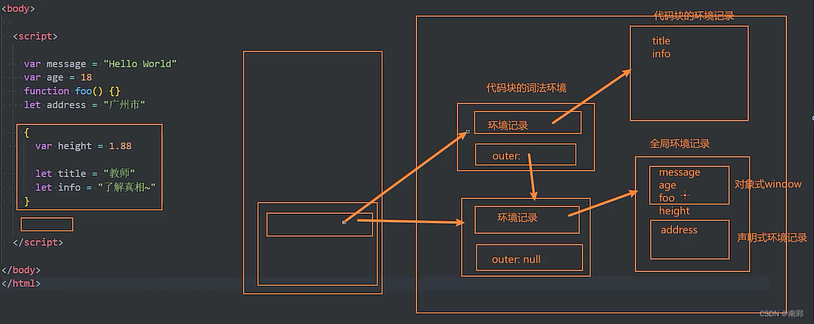
跳出代码块，执行剩余代码
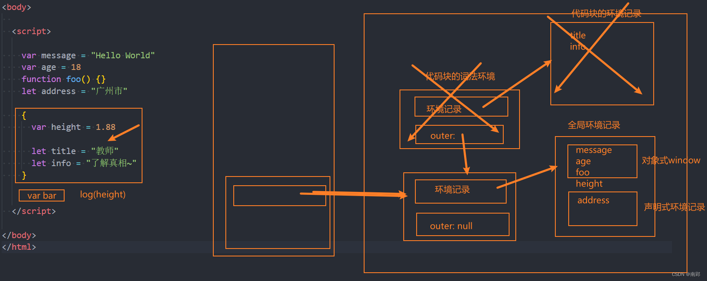
<button>按钮0</button>
<button>按钮1</button>
<button>按钮2</button>
<button>按钮3</button>
const btnEls = document.querySelectorAll('button')
for (let i = 0; i < btnEls.length; i++) { // 此时for{}形成一个新的词法环境
const btnEl = btnEls[i];
btnEl.onclick = function () {
console.log(`点击了${i}按钮`);
}
}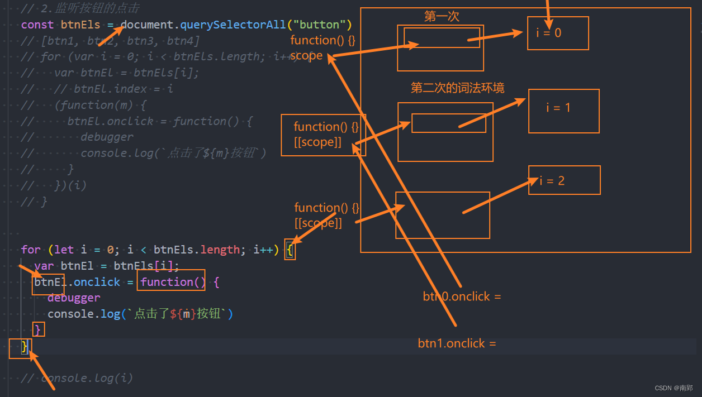
3. 模板字符串
使用字符串模板来嵌入JS的变量或者表达式来进行拼接：
- 使用``符号来编写字符串，称之为模板字符串
- 通过 ${expression} 来嵌入动态的内容
const name = 'why'
const age = 18
const info = `My name is ${name}`
console.log(info);
function foo(...args) {
console.log('参数：', args);
}
foo`my name is ${name}, my age is ${age}, my height is ${1.88}`4. ES6 函数的增强用法
4.1 函数的默认参数
在编写函数时，若没有传入参数，可以给函数一个默认值
function foo1(age, name = 'why', ...arg) {
console.log(name, age);
}
foo1(18)
console.log(foo1.length);//1- 参数的默认值我们通常会将其放到后面，剩余参数放在最后
- 默认值以及后面的参数都不计算在函数的 length 之内
4.2 默认参数解构
默认值也可以和解构一起来使用：
// 原始做法
function foo(obj = { name: 'why', age: 18 }) {
console.log(obj.name, obj.age);
}
// 解构版
function foo({ name, age } = { name: 'why', age: 18 }) {
console.log(name, age);
}
// 解构改进版
function foo({ name = 'why', age = 18 } = {}) {
console.log(name, age);
}
foo()4.3 箭头函数的补充
- 箭头函数是没有显式原型prototype的，所以不能作为构造函数，使用new来创建对象；
- 箭头函数也不绑定this、arguments、super参数
5. 展开语法
展开语法的场景：
- 在函数调用/数组构造时，将数组表达式或者string在语法层面展开；
- 在构造字面量对象时, 将对象表达式按key-value的方式展开
const names = ["abc", "cba", "nba", "mba"]
const str = "Hello"
// 数组构造
const newNames = [...names, "aaa", "bbb"]
console.log(newNames)
// 函数调用
function foo(name1, name2, ...args) {
console.log(name1, name2, args);
}
foo(...names)
foo(...str)
// 对象构造
var obj = {
name: 'why',
age: 18
}
var bar = {
...obj,
height: 1.88
}
console.log(bar);5.1 引用赋值/浅拷贝/深拷贝(重要)
const obj = {
name: 'why',
age: 18,
friend: {
name: 'curry'
}
}
//1.引用赋值
const info1 = obj
//2.浅拷贝
const info2 = {
...obj
}
info2.name = 'kobe'
console.log(obj.name, info2.name);//why kobe
info2.friend.name = 'james'
console.log(obj.friend.name)//james
//3.深拷贝
//1.第三方库
//2.手写
//3.利用现有JS机制
const info3 = JSON.parse(JSON.stringify(obj))
info3.friend.name = 'james'
console.log(info3.friend.name);
console.log(obj.friend.name);//curry引用赋值：直接将内存地址传给新变量（在新变量上修改会影响原变量）
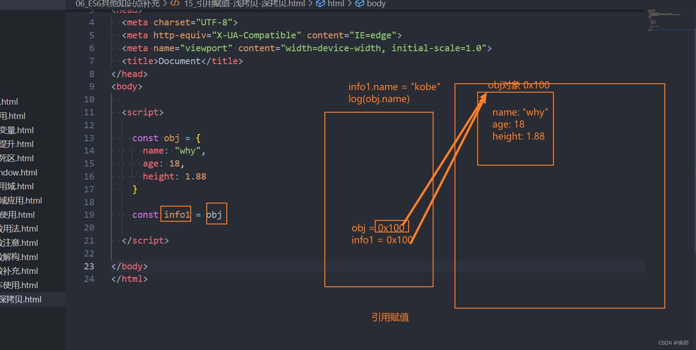浅拷贝：新创建一个对象将原对象中内容拷贝过来，但只拷贝一层
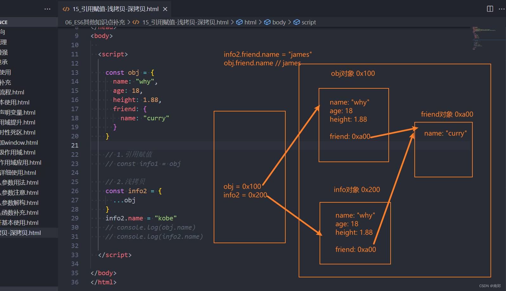深拷贝：全部重新创建对象
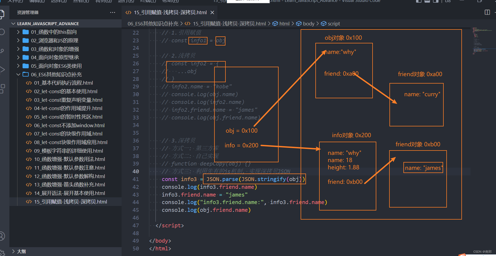
6. 数值的表示
- 规范二进制和八进制写法
- 数字过长时，可以使用_作为连接符
// 1.进制
console.log(100)//十进制
console.log(0b100)//二进制
console.log(0o100)//八进制
console.log(0x100)//十六进制
// 2.长数字的表示
const money = 100_00_00_0000_00_007. Symbol 符号使用
一个对象，我们希望在其中添加一个新的属性和值，但是我们在不确定它原来内部有什么内容的情况下，很容易造成冲突，从而覆盖掉它内部的某个属性
Symbol就是为了解决上面的问题，用来生成一个独一无二的属性
- Symbol即使多次创建值，它们也是不同的：函数执行后每次创建出来的值都是独一无二的
Object.keys()得到的值不包含Symbol- 利用
Object.getOwnPropertySymbols()得到只含有Symbol的数组 - 在创建Symbol值的时候传入一个描述description
- 利用
const s1 = Symbol()
const s2 = Symbol()
const obj = {
name: 'why',
[s1]: 'aaa',
}
obj[s2] = 'bbb'
console.log(Object.keys(obj));//不包含Symbol
const symbolKeys = Object.getOwnPropertySymbols(obj)
for (const key of symbolKeys) {
// console.log(key);// 得到symbolKeys中的所有值（分开）
console.log(obj[key]);
}
// Symbol函数直接生成的值, 都是独一无二
const s3 = Symbol('ccc')
console.log(s3.description);//ccc
const s4 = Symbol(s3.description)
console.log(s3 === s4)//false如果我们想创建相同的Symbol：
- 使用
Symbol.for方法来做到这一点 - 通过
Symbol.keyFor方法来获取对应的值
const s3 = Symbol('ccc')
const s5 = Symbol.for(s3.description)
console.log(s5);// Symbol(ccc)
console.log(Symbol.keyFor(s5));//ccc
const s6 = Symbol.for(s3.description)
console.log(s5 === s6)//true8. 新增数据结构
在ES6之前，我们存储数据的结构主要有两种：数组、对象。
在ES6中新增了另外两种数据结构：Set、Map，以及它们的另外形式WeakSet、WeakMap
8.1 Set、WeakSet
Set是一个新增的数据结构，可以用来保存数据，类似于数组，但是和数组的区别是元素不能重复
const set = new Set()//需通过Set构造函数，无字面量创建方式
set.add(12)
set.add(22)
set.add(35)
set.add(22)
console.log(set);
set.forEach(item => console.log(item))
// 应用场景：数组去重
const names = ['abc', 'cba', 'nba', 'cba']
const newNameSet = new Set(names)
const newName = Array.from(newNameSet)
console.log(newName);Set常见的属性：
size：返回Set中元素的个数
Set常用的方法：add(value)：添加某个元素，返回Set对象本身delete(value)：从set中删除和这个值相等的元素，返回boolean类型has(value)：判断set中是否存在某个元素，返回boolean类型clear()：清空set中所有的元素，没有返回值forEach(callback, [, thisArg])：通过forEach遍历set- 支持for of的遍历的。
WeakSet也是内部元素不能重复的数据结构
与Set的区别：
- WeakSet中只能存放对象类型，不能存放基本数据类型
- WeakSet对元素的引用是弱引用，如果没有其他引用对某个对象进行引用，那么GC可以对该对象进行回收
WeakSet常见的方法：
add(value)：添加某个元素，返回WeakSet对象本身delete(value)：从WeakSet中删除和这个值相等的元素，返回boolean类型has(value)：判断WeakSet中是否存在某个元素，返回boolean类型- WeakSet不能遍历（只是对对象的弱引用，存储到WeakSet中的对象是没办法获取的）
8.2 Map、WeakMap
Map，用于存储映射关系
在之前使用对象来存储映射关系，他们有什么区别呢？
- 对象存储映射关系只能用字符串（ES6新增了Symbol）作为属性名（key）
- 某些情况下我们可能希望通过==其他类型==作为key（比如对象）这个时候会自动将对象转成字符串来作为key
const info1 = { name: 'why' }
const info2 = { age: 18 }
const map = new Map()
map.set(info1, 'aaa')
map.set(info2, 'bbb')
console.log(map);
map.forEach(item => console.log(item))// 得到key对应的value
for (const item of map) {
const [key, value] = item
console.log(key, value);
}Map常见的属性：
size：返回Map中元素的个数
Map常见的方法：set(key, value)：在Map中添加key、value，并且返回整个Map对象get(key)：根据key获取Map中的valuehas(key)：判断是否包括某一个key，返回Boolean类型delete(key)：根据key删除一个键值对，返回Boolean类型clear()：清空所有的元素forEach(callback, [, thisArg])：通过forEach遍历Map- Map可以通过for of进行遍历
WeakMap，也是以键值对的形式存在的
和Map的区别：
- WeakMap的key只能使用对象，不接受其他的类型作为key
- key对象的引用是弱引用，如果没有其他引用引用这个对象，那么GC可以回收该对象
WeakMap常见的方法：
set(key, value)：在Map中添加key、value，并且返回整个Map对象get(key)：根据key获取Map中的valuehas(key)：判断是否包括某一个key，返回Boolean类型delete(key)：根据key删除一个键值对，返回Boolean类型- 不能遍历
二、ES7~ES13 知识点
1. ES7 知识点
判断一个数组中是否包含一个指定的元素
arry.includes('why', fromIndex) //true
指数运算符：**
2. ES8 知识点
2.1 对象相关属性
通过
Object.values()来获取所有的value值通过
Object.entries()获取到一个数组，数组中会存放可枚举属性的键值对数组
const obj = {
name: 'why',
age: 18,
height: 1.88,
}
const keys = Object.keys(obj)
console.log(keys);
const values = Object.values(obj)
console.log(values);
const entries = Object.entries(obj)// [['name', 'why'], ['age', 18], ['height', 1.88]]
for (const entry of entries) {
const [key, value] = entry
console.log(key, value);
}
console.log(Object.entries(['abc', 'nba']));// [['0', 'abc'], ['1', 'nba']]
console.log(Object.entries('Hi'));// [['0', H], ['1', i]]2.2 字符串填充方法
padStart/padEnd 分别对字符串的首尾进行填充
//应用：时间格式化
const min = '15'.padStart(2, '0')
const sec = '6'.padStart(2, '0')
console.log(`${min}:${sec}`);//15:06
//应用：敏感数据格式化
let cardNum = '342601199910274626'
const sliceNum = cardNum.slice(-4)
cardNum = sliceNum.padStart(cardNum.length, '*')
const card = document.querySelector('h1')
card.innerHTML = cardNum //**************46263. ES10 知识点
3.1 flat、flatMap
flat() 方法会按照一个可指定的深度递归遍历数组，并将所有元素与遍历到的子数组中的元素合并为一个新数组返回
const nums = [10, 20, [111, 222], [[123, 321], [231, 312]]]
const newNums1 = nums.flat(1)
console.log(newNums1);// [10, 20, 111, 222, [123, 321], [231,312]]
const newNums2 = nums.flat(2)
console.log(newNums2);flatMap() 方法首先使用映射函数映射每个元素，然后将结果压缩成一个新数组。
- flatMap是先进行map操作，再做flat的操作；
- flatMap中的flat相当于深度为1；
const messages = [
"Hello World aaaaa",
"Hello Coderwhy",
"你好啊 李银河"
]
//先map 再flat
const newMessage = messages.map(item => item.split(' '))
console.log(newMessage);// [['Hello', 'World', 'aaaaa'],['Hello', 'Coderwhy'],['你好啊', '李银河']]
const finaMessage = newMessage.flat(1)
console.log(finaMessage);
//flatmap
const finaMessages = messages.flatMap(item => item.split(' '))
console.log(finaMessages);3.2 Object.fromEntries
Object.entries 将一个对象转换成 entries，Object.formEntries将 entries 转换成对象
//应用
const searchString = '?name=why&age=18&height=1.88'
const params = new URLSearchParams(searchString)
console.log(params.get('name'));
console.log(params.get('age'));
for (const item of params) { //相当于params.entries
console.log(item);
}
const paramObj = Object.fromEntries(params)
console.log(paramObj.name);
console.log(paramObj.age);3.3 清除字符串首尾空格
const message = " Hello World "
console.log(message.trim())
console.log(message.trimStart())
console.log(message.trimEnd())4. ES11 知识点
4.1 BigInt
过大的数字，在其后加上n
4.2 空值合并运算符
function foo(arg1 = '我是默认值') {
//不严谨的写法
// arg1 = arg1 ? arg1 : '我是默认值'
// arg1 = arg1 || '我是默认值'
//严谨的写法
// arg1 = (arg1 === undefined || arg1 === null) ? '我是默认值' : arg1
//ES6后
arg1 = arg1 ?? '我是默认值'
}
foo('')//null和undefined会成为默认值
//''、0、false不会输出默认值4.3 可选链的使用
让代码在进行null和undefined判断时更加清晰和简洁
const obj = {
name: 'why',
friend: {
name: 'kobe',
// running: function () {
// console.log('running~');
// }
}
}
obj?.friend?.running?.()5. ES12 知识点
5.1 Finalization Registry
FinalizationRegistry 对象可以让你在对象被垃圾回收时请求一个回调。
- 当一个在注册表中注册的对象被回收时，请求在某个时间点上调用一个清理回调。（清理回调有时被称为 finalizer ）
- 通过调用register方法，注册任何你想要清理回调的对象，传入该对象和所含的值
let obj = { name: 'why', age: 18 }
const finalRegistry = new FinalizationRegistry((value) => {
console.log('对象被回收了', value)
})
finalRegistry.register(obj, 'why')
obj = null5.2 弱引用
如果我们默认将一个对象赋值给另外一个引用，那么这个引用是一个强引用；如果我们希望是一个弱引用的话，可以使用WeakRef
let obj = {name: 'why'}
let info = new WeakRef(obj)5.3 逻辑赋值运算符
// 赋值运算符
let counter = 100
// counter = counter + 100
counter += 100
// 逻辑赋值运算符
function foo(message) {
// 1.||逻辑赋值运算符
message = message || "默认值"
message ||= "默认值"
// 2.??逻辑赋值运算符
// message = message ?? "默认值"
message ??= "默认值"
console.log(message)
}
foo("abc")
foo()
// 3.&&逻辑赋值运算符
let obj = {
name: "why"
}
// obj = obj && obj.name
obj &&= obj.name
console.log(obj)5.4 字符串全部替换
const message = "my name is why, why age is 18"
const newMessage = message.replace("why", "kobe")
const newMessage2 = message.replaceAll("why", "kobe")
console.log(newMessage)
console.log(newMessage2)6. ES13 知识点
6.1 at()
应用于在数组、字符串查找元素
var names = ['abc', 'cba', 'nba']
console.log(names.at(1))//cba
console.log(names.at(-1))//nba
var str = 'Hello'
console.log(str.at(1))
console.log(str.at(-1))6.2 对象属性 hasOwn
Object中新增了一个静态方法（类方法）： hasOwn(obj, propKey)
用于判断一个对象中是否有某个自己的属性
const obj = {
name: 'why',
__proto__: {
address: '广州'
}
}
// console.log(obj.hasOwnProperty('name'));
// console.log(obj.hasOwnProperty('address'));
// hasOwn替换hasOwnProperty，防止对象内部有重写hasOwnProperty
console.log(Object.hasOwn(obj, 'name'));
console.log(Object.hasOwn(obj, 'address'));6.3 class 中的新成员
public instance fields
public static fields
private instance fields
private static fields
static block
class Person {
// 1.实例属性
// 对象属性: public 公共 -> public instance fields
height = 1.88
// ES13对象属性: private 私有: 程序员之间的约定
#intro = "name is why"
// 2.类属性(static)
// 类属性: public
static totalCount = "70亿"
// 类属性: private
static #maleTotalCount = "20亿"
constructor(name, age) {
// 对象中的属性: 在constructor通过this设置
this.name = name
this.age = age
this.address = "广州市"
}
// 3.静态代码块
static {
console.log("初始化")
}
}
const p = new Person("why", 18)
// console.log(p.#intro)
console.log(Person.height);//undefined
console.log(Person.totalCount);//70亿三、Proxy 和 Reflect 监听
1. Proxy
需求：有一个对象，我们希望监听这个对象中的属性被设置或获取的过程
ES6之前，利用Object.defineProperty
const obj = {
name: 'why',
age: 18
}
const keys = Object.keys(obj)
// 遍历对象中每个属性
for (const key of keys) {
let value = obj[key]
Object.defineProperty(obj, key, {
set: function (newValue) {
console.log(`监听：给${key}设置了新的值`, newValue);
value = newValue
},
get: function () {
console.log(`监听：获取${key}的值`);
return value
}
})
}
console.log(obj.name);
obj.name = 'kobe'缺点：Object.defineProperty设计的初衷，不是为了去监听截止一个对象中 所有的属性的；无法监听更加丰富的操作，比如新增属性、删除属性
1.1 Proxy 基本使用
在ES6中，新增了一个Proxy类，用于帮助我们创建一个代理：
- 需要
new Proxy()对象，并且传入需要侦听的对象以及一个处理对象，可以称之为handlerconst p = new Proxy(target, handler)
- 之后的操作都是直接对Proxy的操作，而不是原有的对象，在handler里面进行侦听
const obj = {
name: 'why',
age: 18
}
const objProxy = new Proxy(obj, {
set: function (target, key, newValue) {
console.log(`给属性${key}设置了新的值：`, newValue);
target[key] = newValue
},
get: function (target, key) {
console.log(`获取属性${key}的值`);
return target[key]
},
deleteProperty: function (target, key) {
console.log(`监听: 监听删除${key}属性`)
delete obj.key
},
has: function (target, key) {
console.log(`监听: 监听in判断 ${key}属性`)
return key in target
}
})
console.log(objProxy.name);//why
objProxy.name = 'kobe'
console.log(objProxy.name);//kobe
console.log(obj);
delete objProxy.name
console.log("age" in objProxy)1.2 Proxy 捕获器
set函数有四个参数：
- target：目标对象（侦听的对象）
- property：将被设置的属性key
- value：新属性值
- receiver：调用的代理对象
get函数有三个参数：
- target：目标对象（侦听的对象）
- property：被获取的属性key
- receiver：调用的代理对象
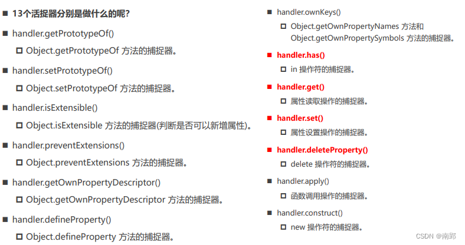
1.3 construct 和 apply
捕捉器中还有construct和apply，它们是应用于函数对象的
function foo(num1, num2) {
console.log(this, num1, num2)
}
const fooProxy = new Proxy(foo, {
apply: function (target, thisArg, otherArgs) {
console.log("监听执行了apply操作")
target.apply(thisArg, otherArgs)
},
construct: function (target, otherArray) {
console.log("监听执行了new操作")
console.log(target, otherArray)//[function foo] ['aaa','bbb']
return new target(...otherArray)
}
})
// fooProxy.apply("abc", [111, 222])
new fooProxy("aaa", "bbb")2. Reflect
Reflect也是ES6新增的一个API，它是一个对象，字面的意思是反射，提供了很多操作 JavaScript 对象的方法
2.1. Reflect 常见方法
Object作为一个构造函数，这些操作实际上放到它身上并不合适；另外还包含一些类似于 in、delete操作符，让JS看起来是会有一些奇怪的
- 所以在ES6中新增了Reflect，让我们这些操作都集中到了Reflect对象上
- 另外在使用Proxy时，可以做到不操作原对象
- 返回值为bool值，可以直接判断
const obj = {
name: "why",
age: 18
}
// 1.用以前的方式进行操作
// delete obj.name
// if (obj.name) {
// console.log("name没有删除成功")
// } else {
// console.log("name删除成功")
// }
// 2.Reflect
if (Reflect.deleteProperty(obj, "name")) {
console.log("name删除成功")
} else {
console.log("name没有删除成功")
}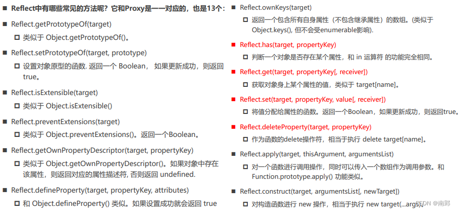
2.2 Reflect 和 Proxy 一起使用
可以将之前Proxy案例中对原对象的操作，都修改为Reflect来操作：
const obj = {
_name: 'why',
set name(newValue) {
console.log("this:", this) // this默认是obj，receiver后变为objProxy
this._name = newValue // 此传参过程再次调用objProxy.set
},
get name() {
return this._name
}
}
const objProxy = new Proxy(obj, {
set: function (target, key, newValue, receiver) {
// 好处一：不再直接操作原对象
// 好处二：返回bool值，可判断本次操作是否成功
console.log('Proxy中设置方法被调用');
// target[key] = newValue
const isSuccess = Reflect.set(target, key, newValue, receiver)
if (!isSuccess) {
throw new Error(`set ${key} failure`)
}
/* 好处三：
receiver就是外层Proxy对象
Reflect.set/get最后一个参数, 可以决定对象访问器setter/getter的this指向
*/
},
get: function (target, key, receiver) {
console.log("proxy中获取方法被调用")
return Reflect.get(target, key, receiver)
}
})
objProxy.name = 'kobe'
console.log(obj);
console.log(objProxy.name);2.3 Reflect 的 construct 用法
stu 的类型是 Student，但想执行Person()的代码
function Person(name, age) {
this.name = name
this.age = age
}
function Student() {
}
const stu = Reflect.construct(Person, ['why', 18], Student)
console.log(stu);
console.log(stu.__proto__ === Student.prototype);//true一、Promise 使用
1. 异步代码存在困境
调用一个函数，这个函数中发送网络请求（我们可以用定时器来模拟）
- 如果发送网络请求成功了，那么告知调用者发送成功，并且将相关数据返回过去
- 如果发送网络请求失败了，那么告知调用者发送失败，并且告知错误信息；
// 1.设计这样的一个函数
function execCode(counter, successCallback, failureCallback) {
// 异步任务
setTimeout(() => {
if (counter > 0) { // counter可以计算的情况
let total = 0
for (let i = 0; i < counter; i++) {
total += i
}
// 成功情况，在某一个时刻只需要回调传入的函数
successCallback(total)
} else { // 失败情况, counter有问题
failureCallback(`${counter}值有问题`)
}
}, 3000)
}
// 2.ES5之前,处理异步的代码都是这样封装
execCode(100, (value) => {
console.log("本次执行成功了:", value)
}, (err) => {
console.log("本次执行失败了:", err)
})缺点：
- 需要自己来设计回调函数、回调函数的名称、回调函数的使用等
- 对于不同的人、不同的框架设计出来的方案是不同的，那么我们必须耐心去看别人的源码或者文档，以便可以理解这个函数到底怎么用
2. Promise 的代码结构
- Promise是一个类
- 当我们需要的时候，给予调用者一个承诺：待会儿我会给你回调数据时，就可以创建一个Promise的对象
- 在通过new创建Promise对象时，我们需要==传入一个回调函数==，我们称之为executor
- 这个回调函数会被立即执行，并且给传入另外两个回调函数
resolve、reject- 当我们调用resolve回调函数时，会执行Promise对象的
then方法传入的回调函数 - 当我们调用reject回调函数时，会执行Promise对象的
catch方法传入的回调函数
- 当我们调用resolve回调函数时，会执行Promise对象的
- 这个回调函数会被立即执行，并且给传入另外两个回调函数
function execode(count) {
const promise = new Promise((resolve, reject) => { // 此处函数为立即执行函数
setTimeout(() => {
if (count > 0) {
let total = 0
for (let i = 0; i <= count; i++) {
total += i
}
// 成功的回调
resolve(total)
} else {
// 失败的回调
reject(`${count}错误`)
}
}, 3000);
})
return promise
}
execode(100).then((value) => {
console.log('成功，有了结果：', value);
}).catch((err) => {
console.log('失败，有了错误：', err);
})3. Promise 状态变化
Promise使用过程，我们可以将它划分成三个状态：
- 待定（pending）: 初始状态，既没有被兑现，也没有被拒绝
- 当执行executor中的代码时，处于该状态
- 已兑现（fulfilled）: 意味着操作成功完成
- 执行了resolve时，处于该状态，Promise已经被兑现
- 已拒绝（rejected）: 意味着操作失败
- 执行了reject时，处于该状态，Promise已经被拒绝
const promise = new Promise((resolve, reject) => {
// 1.待定状态
console.log('111111');
console.log('222222');
// 状态一旦确定，不会更改，不能再执行别的回调函数来改变状态
// 2.兑现状态
resolve()
// 3.拒绝状态
reject()
})
promise.then((value) => {
console.log('成功的回调');
}).catch((err) => {
console.log('失败的回调');
})3.1 resolve不同的值
- 情况一：如果resolve传入一个普通的值或者对象，那么这个值会作为then回调的参数
- 情况二：如果resolve中传入的是另外一个Promise，那么这个新Promise会决定原Promise的状态
- 情况三：如果resolve中传入的是一个对象，并且这个对象有实现then方法，那么会执行该then方法，并且根据then方法的结果来决定Promise的状态
const p = new Promise((resolve) => {
setTimeout(() => {
resolve("p的resolve")
}, 2000)
})
const promise = new Promise((resolve, reject) => {
//1.普通值
resolve({ name: 'why', age: 18 })
//2.promise
resolve(p)
//3.thenable
resolve({
then: function (resolve) {
resolve(1111)
}
})
})
promise.then(res => {
console.log("then中拿到结果:", res)
})4. Promise 实例方法
4.1 then 和 catch 方法
then方法是Promise对象上的一个方法（实例方法）
- 放在Promise的原型上的
Promise.prototype.then
then方法接受两个参数：
- resolve的回调函数：当状态变成resolve时会回调的函数
- reject的回调函数：当状态变成reject时会回调的函数
一个Promise的then方法是可以被多次调用的：
- 每次调用我们都可以传入对应的resolve回调
- 当Promise的状态变成resolve的时候，这些回调函数都会被执行
const promise = new Promise((resolve, reject) => {
resolve('success')
// reject('failure')
})
// promise.then(res => {
// console.log('成功回调', res);
// }, err => {
// console.log('失败回调', err);
// })
promise.then(res => {
console.log('成功回调', res);
})
promise.then(res => {
console.log('成功回调', res);
})
promise.then(res => {
console.log('成功回调', res);
})
promise.then(res => {
console.log('成功回调', res);
})then 的返回值
then方法本身是有返回值的，它的返回值是一个Promise
当then方法中的回调函数返回一个结果时，那么它处于resolve状态，并且会将结果作为resolve的参数
- 返回一个普通的值
- 返回一个Promise
- 返回一个thenable值
当then方法抛出一个异常时，那么它处于reject状态
const promise = new Promise((resolve, reject) => {
resolve('aaaaa')
// reject('failure')
})
promise.then(res => { // 返回新的promise
console.log('第一个then', res); //aaaaa
return 'bbbbb'
}).then(res => {
console.log('第二个then', res);//bbbbb
return 'ccccc'
}).then(res => {
console.log('第三个then', res);//ccccc
})
promise.then(res => {
console.log('添加第二个then', res);//aaaaa
})then返回一个Promise，return中的值传入resolve的result中作为下一次执行的参数
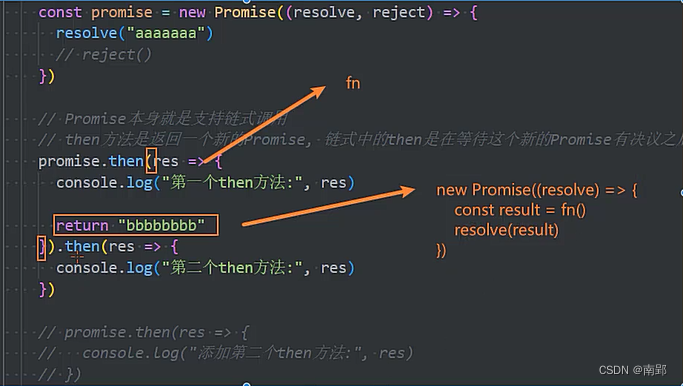
catch方法也是Promise对象上的一个方法（实例方法）
一个Promise的catch方法是可以被多次调用的
catch方法也是会返回一个Promise对象的，所以catch方法后面我们可以继续调用then方法或者catch方法
const promise = new Promise((resolve, reject) => {
// resolve('success')
reject('failure')
})
promise.catch(err => {
console.log('失败回调', err);
}).then(res => {
console.log('成功回调', res);
})
// 输出：失败回调failure 成功回调undefined
// 因为catch传入的回调在执行完后，默认状态依然会是resolve的需要catch() 方法兜底，处理异常情况
中断函数继续执行:
方式一: return
方式二: throw new Error()
方式三: yield 暂停(暂时性的中断)
const promise = new Promise((resolve, reject) => {
resolve("aaaaaa")
})
promise.then(res => {
console.log("then第一次回调:", res)
// throw new Error("第二个Promise的异常error")
return "bbbbbb"
}).then(res => {
console.log("then第二次回调:", res)
throw new Error("第三个Promise的异常error")
}).then(res => {
console.log("then第三次回调:", res)
}).catch(err => {
console.log("catch回调被执行:", err)
})
// then第一次回调: aaaaaa
// then第二次回调: bbbbbb
// catch回调被执行: Error: 第三个Promise的异常error4.2 finally 方法
finally方法不接收参数，无论Promise对象无论变成fulfilled还是rejected状态，最终都会被执行
const promise = new Promise((resolve, reject) => {
resolve('aaaaa')
// reject('bbbbb')
})
promise.then(res => {
console.log('then', res);//执行
}).catch(err => {
console.log('catch', err);
}).finally(() => {
console.log('hhhhhhh');//执行
})5. Promise 类方法
5.1 resolve 和 reject 方法
Promise.resolve() 相当于new Promise，并且执行resolve操作Promise.reject() 相当于new Promise，只是会调用reject
const studentList = ['abc', 'nab']
const promise = Promise.resolve(studentList)
const promise1 = Promise.reject('error')
promise.then(res => {
console.log(res);
})
promise1.catch(err => {
console.log(err);
})5.2 all 和 allSettled 方法
Promise.all：
- 将多个Promise包裹在一起形成一个新的Promise
- 新的Promise状态由包裹的所有Promise共同决定：
- 当所有的Promise状态变成fulfilled状态时，新的Promise状态为fulfilled，并且会将所有Promise的返回值组成一个数组
- 当有一个Promise状态为reject时，新的Promise状态为reject，并且会将第一个reject的返回值作为参数
Promise.allSettled：
- 在所有的Promise都有结果（settled），无论是fulfilled，还是rejected时，都会有最终的状态；
- 并且这个Promise的结果一定是fulfilled的
- 结果：一个数组，数组中每一个值都是对象。对象中包含status状态，以及对应的value值
const p1 = new Promise((resolve, reject) => {
setTimeout(() => {
// resolve("p1 resolve")
reject("p1 reject error")
}, 3000)
})
const p2 = new Promise((resolve, reject) => {
setTimeout(() => {
resolve("p2 resolve")
}, 2000)
})
const p3 = new Promise((resolve, reject) => {
setTimeout(() => {
resolve("p3 resolve")
}, 5000)
})
// all
Promise.all([p1, p2, p3]).then(res => {
console.log(res);
}).catch(err => {
console.log(err);
})
// allSettled
Promise.allSettled([p1, p2, p3]).then(res => {
console.log(res);
}).catch(err => {
console.log(err);
})5.3 race 和 any 方法
race 表示多个Promise相互竞争，谁先有结果，那么就使用谁的结果
- any 会等到一个fulfilled状态，才会决定新Promise的状态，此时输出该返回值
- 如果所有的Promise都是reject，会等到所有的Promise都变成rejected状态，报一个AggregateError的错误
const p1 = new Promise((resolve, reject) => {
setTimeout(() => {
// resolve("p1 resolve")
reject("p1 reject error")
}, 3000)
})
const p2 = new Promise((resolve, reject) => {
setTimeout(() => {
resolve("p2 resolve")
}, 2000)
})
const p3 = new Promise((resolve, reject) => {
setTimeout(() => {
resolve("p3 resolve")
}, 5000)
})
// any
Promise.any([p1, p2, p3]).then(res => {
console.log("any promise res:", res)
}).catch(err => {
console.log("any promise err:", err)
})// p2 resolve二、迭代器和生成器
1. 迭代器 Iterator
迭代器是帮助我们对某个数据结构进行遍历的对象
实现：next方法
- 一个无参数或者一个参数的函数
- 返回一个应当拥有以下两个属性的对象
- ==done（boolean）==
- 如果迭代器可以产生序列中的下一个值，则为 false。
- 如果迭代器已将序列迭代完毕，则为 true。这种情况下，value 是可选的，如果它依然存在，即为迭代结束之后的默认返回值。
- ==value==
- 迭代器返回的任何 JavaScript 值。done 为 true 时可省略
- ==done（boolean）==
// 为数组创建迭代器
const names = ["abc", "cba", "nba"]
const nums = [100, 24, 55, 66, 86]
// 封装一个函数
function createArrayIterator(arr) {
let index = 0
return {
next: function () {
if (index < arr.length) {
return { done: false, value: arr[index++] }
} else {
return { done: true }
}
}
}
}
const namesIterator = createArrayIterator(names)
console.log(namesIterator.next());
console.log(namesIterator.next());
console.log(namesIterator.next());
console.log(namesIterator.next());1.1 可迭代对象
但是上面的代码需要再创建一个迭代器对象，可以对代码进一步封装，让其变成一个可迭代对象
使用 [Symbol.iterator] 访问该属性
需要返回一个: 迭代器
// 将infos变成一个可迭代对象
/*
1.必须实现一个特定的函数: [Symbol.iterator]
2.这个函数需要返回一个迭代器(这个迭代器用于迭代当前的对象)
*/
const infos = {
friends: ["kobe", "james", "curry"],
[Symbol.iterator]: function() {
let index = 0
const infosIterator = {
next: () => {
if (index < this.friends.length) {
return { done: false, value: this.friends[index++] }
} else {
return { done: true }
}
}
}
return infosIterator
}
}
const iterator = infos[Symbol.iterator]()
console.log(iterator.next());
console.log(iterator.next());
console.log(iterator.next());
// 可迭代对象可以进行for of 操作
for (const item of infos) {
console.log(item);
}1.1.1 原生迭代器对象
平时创建的很多原生对象已经实现了可迭代协议，会生成一个迭代器对象
String、Array、Map、Set、arguments对象、NodeList集合
这些对象中必然有一个[Symbol.iterator]函数
// 1.数组
const names = ["abc", "cba", "nba"]
// for (const name of names) {
// console.log(name)
// }
console.log(names[Symbol.iterator]())
// 2.Set
const set = new Set(["abc", "cba", "nba"])
// for (const item of set) {
// console.log(item)
// }
const setIterator = set[Symbol.iterator]()
console.log(setIterator.next())
console.log(setIterator.next())
console.log(setIterator.next())
console.log(setIterator.next())1.1.2 可迭代对象的应用
- 用在特定的语法上：for …of、展开语法、yield*、解构赋值
- 创建一些对象时：
new Map([Iterable])、new WeakMap([iterable])、new Set([iterable])、new WeakSet([iterable]) - 一些方法的调用：Promise.all(iterable)、Promise.race(iterable)、Array.from(iterable)
// 1.用在特定的语法上(比如展开语法)
const info = {
name: "why",
age: 18,
height: 1.88,
[Symbol.iterator]: function() {
const values = Object.values(this)
let index = 0
const iterator = {
next: function() {
if (index < values.length) {
return { done: false, value: values[index++] }
} else {
return { done: true }
}
}
}
return iterator
}
}
function foo(arg1, arg2, arg3) {
console.log(arg1, arg2, arg3)
}
foo(...info)
// 2.一些类的构造方法中, 也是传入的可迭代对象
const names = ["abc", "cba", "nba"]
const set = new Set(names)
console.log(set);
const set1 = new Set(infos)
console.log(set1);
// 3.一些常用的方法
const p1 = Promise.resolve("aaaa")
const p2 = Promise.resolve("aaaa")
const p3 = Promise.resolve("aaaa")
const pSet = new Set()
pSet.add(p1)
pSet.add(p2)
pSet.add(p3)
Promise.all(pSet).then(res => {
console.log("res:", res)
})// ['aaaa', 'aaaa', 'aaaa']
function bar() {
// 将arguments转成Array类型
const arr = Array.from(arguments)
console.log(arr)
}
bar(111, 222, 333)1.2 自定义类的迭代
class Person {
constructor(name, age, height, friends) {
this.name = name
this.age = age
this.height = height
this.friends = friends
}
// 实例方法
[Symbol.iterator]() {
let index = 0
return {
next: () => {
if (index < this.friend.length) {
return { done: false, value: this.friend[index++] }
} else {
return { done: true }
}
},
return: () => {
console.log('监听到迭代器中断了');
return { done: true }
}
}
}
}
const p = new Person("why", 18, 1.88, ["curry", "kobe", "james", "tatumu"])
for (const item of p) {
console.log(item)
if (item === 'curry') {
break
}
}
// james curry 监听到迭代器中断了1.3 迭代器的中断(了解)
- 迭代器在某些情况下会在没有完全迭代的情况下中断：
- 比如遍历的过程中通过break、return、throw中断了循环操作
- 比如在解构的时候，没有解构所有的值
- 那么这个时候我们想要监听中断的话，可以添加return方法
// 见上面代码2. 生成器 Generator
生成器是ES6中新增的一种函数控制、使用的方案，它可以让我们更加灵活的控制函数什么时候继续执行、暂停执行等
2.1. 生成器函数
生成器函数也是一个函数，但是和普通的函数有一些区别：
- 首先，生成器函数需要在function的后面加一个符号：
* - 其次，生成器函数可以通过yield关键字来控制函数的执行流程。调用生成器不会执行里面的函数
- 最后，生成器函数的返回值是一个Generator（生成器）：
- 生成器事实上是一种特殊的迭代器
function* foo(name1) {
console.log('1111', name1);
console.log('2222', name1);
const name2 = yield 'aaa'
console.log('3333', name2);
console.log('4444', name2);
const name3 = yield 'bbb'
// return 'bbb'
console.log('5555', name3);
console.log('6666', name3);
yield 'ccc'
return undefined
}
const generator = foo('next1')// 第一段代码的参数在这里传
// 1.普通执行时
console.log(generator.next());// {value: 'aaa', done: false}
console.log(generator.next());// {value: 'bbb', done: false}
console.log(generator.next());// {value: 'ccc', done: false}
console.log(generator.next());// {value: undefined, done: true}
// 2.中间有return语句时
console.log(generator.next());// {value: 'aaa', done: false}
console.log(generator.next());// {value: 'bbb', done: true}
console.log(generator.next());// {value: undefined, done: true}
// 3.给函数每次执行时，传入参数
console.log(generator.next());
console.log(generator.next('next2'));
console.log(generator.next('next3'));next函数：
- 调用next函数的时候，可以给它传递参数
return函数：
- return传值后这个生成器函数就会结束，之后调用next不会继续生成值了
2.2 提前结束return/throw(了解)
除了return语句之外，也可以给生成器函数内部抛出异常
function* foo(name1) {
console.log('1111', name1);
console.log('2222', name1);
const name2 = yield 'aaa'
console.log('3333', name2);
console.log('4444', name2);
const name3 = yield 'bbb'
console.log('5555', name3);
console.log('6666', name3);
yield 'ccc'
console.log('last');
return undefined
}
const generator = foo('next1')
console.log(generator.next());
// console.log(generator.return('next2'));
console.log(generator.throw('next2 throw Error'));
console.log('----------------');
console.log(generator.next('next3'));
console.log(generator.next('next4'));
// 1111 next1 2222 next1 {value: 'aaa', done: false}
// return语句生效的情况：
// 1111 next1
// 2222 next1
// {value: 'aaa', done: false}
// {value: 'next2', done: true}
// ----------------
// {value: undefined, done: true}
// {value: undefined, done: true}2.3 generator 替代 iterator
生成器是一种特殊的迭代器，那么在某些情况下我们可以使用生成器来替代迭代器（更简便）
- 不需要写next等复杂的结构，只需要写实现迭代功能的主体代码
const names = ['abc', 'bac', 'nba']
const nums = [100, 22, 66, 88, 55]
function* createArrayIterator(arr) {
// yield* arr
for (let i = 0; i < arr.length; i++) {
yield arr[i]
}
}
const iterator = createArrayIterator(names)
console.log(iterator.next())
console.log(iterator.next())
console.log(iterator.next())
console.log(iterator.next())改进版：使用 yield* 再生产一个可迭代对象
// 自定义类迭代
class Person {
constructor(name, age, height, friends) {
this.name = name
this.age = age
this.height = height
this.friends = friends
}
*[Symbol.iterator]() {
yield* this.friends
}
}
const p = new Person('why', 18, 1.8, ['kobe', 'james', 'curry'])
for (const item of p) {
console.log(item);
}2.4 异步处理方案
案例需求：
- 我们需要向服务器隔两秒发送网络请求获取数据，一共需要发送三次请求
- 第二次的请求url依赖于第一次的结果
- 第三次的请求url依赖于第二次的结果
- 依次类推
// 因为是隔2秒后传值，不能直接用return
function requestData(url) {
return new Promise((resolve) => {
setTimeout(() => {
resolve(url)
}, 2000)
})
}2.4.1 处理一 - 回调地狱
// 方式一: 层层嵌套(回调地狱 callback hell)
function getData() {
// 1.第一次请求
requestData("why").then(res1 => {
console.log("第一次结果:", res1)
// 2.第二次请求
requestData(res1 + "kobe").then(res2 => {
console.log("第二次结果:", res2)
// 3.第三次请求
requestData(res2 + "james").then(res3 => {
console.log("第三次结果:", res3)
})
})
})
}
getData()2.4.2 处理二 - Promise 链式
// 方式二: 使用Promise进行重构(解决回调地狱)
// 链式调用
function getData() {
requestData('why').then(res1 => {
console.log(res1);
return requestData(res1 + 'kobe')
}).then(res2 => {
console.log(res2);
return requestData(res2 + 'james')
}).then(res3 => {
console.log(res3);
})
}
getData()2.4.3 处理三 - generator+yield
function* getData() {
const res11 = yield requestData('why')
console.log(res11);
const res22 = yield requestData(res11 + 'kobe')
console.log(res22);
const res33 = yield requestData(res22 + 'james')
console.log(res33);
}
// 调用方法一
const generator = getData()// 生成器函数调用时不立即执行，先返回一个生成器
generator.next().value.then(res1 => { //res1从promise函数中拿的why
generator.next(res1).value.then(res2 => { //res2从promise函数中拿的res11 + 'kobe'
generator.next(res2).value.then(res3 => {
generator.next(res3)
})
})
})
// generator.next(res1)是将参数'why'传给生成器getData的res11
// generator.next(res1)执行结果为{value: requestData(res11 + 'kobe'), done: false}
// generator.next(res1).value得到一个promise
// 调用方法二：自动化执行生成器函数(了解)
function execGenFn(genFn) {
// 1.获取对应函数的generator
const generator = genFn()
// 2.定义一个递归函数
function exec(res) {
// result -> { done: true/false, value: 值/undefined }
const result = generator.next(res)
if (result.done) return
result.value.then(res => {
exec(res)
})
}
// 3.执行递归函数
exec()
}
execGenFn(getData)2.4.4 处理四 - await/async
// 方式四: async/await的解决方案
async function getData() {
const res1 = await requestData("why")
console.log("res1:", res1)
const res2 = await requestData(res1 + "kobe")
console.log("res2:", res2)
const res3 = await requestData(res2 + "james")
console.log("res3:", res3)
}
const generator = getData()3. 异步 async、await
3.1 异步函数 async
异步函数的内部代码执行过程和普通的函数是一致的，默认情况下也是会被同步执行
异步函数有返回值时，和普通函数会有区别：
- 情况一：异步函数返回值是普通值时，返回值相当于被包裹到Promise.resolve中
- 情况二：如果我们的异步函数的返回值是Promise，状态由会由Promise决定
- 情况三：如果我们的异步函数的返回值是一个对象并且实现了thenable，那么会由对象的then方法来决定
如果我们在async中抛出异常，那么程序它并不会像普通函数一样报错，而是会作为Promise的reject来传递
async function foo() {
console.log('---------1');
'abc'.filter()
console.log('---------2');
// --> Promise.resolve(123)
return 123
}
foo().then(res => {
console.log('res:', res);
}).catch(err => {
console.log('err', err);
})3.2 await 关键字
async函数另外一个特殊之处就是可以在它内部使用await关键字，而普通函数中是不可以的
通常使用await是后面会跟上一个表达式，这个表达式会返回一个Promise
那么await会==等到Promise的状态变成fulfilled状态==，之后继续执行异步函数
如果await后面是一个普通的值，那么会直接返回这个值
如果await后面是一个thenable的对象，那么会根据对象的then方法调用来决定后续的值
如果await后面的表达式，返回的Promise是reject的状态，那么会将这个reject结果直接作为函数的Promise的reject值
function requestData(url) {
return new Promise((resolve, reject) => {
setTimeout(() => {
// resolve(url)
reject('Error message')
}, 2000)
})
}
async function getData() {
const res1 = await requestData('why')
console.log(res1);
const res2 = await requestData(res1 + 'kobe')
console.log(res2);
}
getData().catch(err => {
console.log(err);
}) // reject需要.catch()兜底四、事件循环/队列
1. 进程和线程
- ==进程==：我们可以认为，启动一个应用程序，就会默认启动一个进程（也可能是多个进程）
- ==线程==：每一个进程中，都会启动至少一个线程用来执行程序中的代码，这个线程被称之为主线程
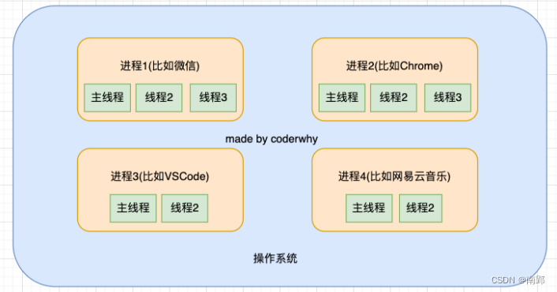
操作系统如何做到同时让多个进程（边听歌、边写代码、边查阅资料）同时工作：
- 这是因为CPU的运算速度非常快，它可以快速的在多个进程之间迅速的切换
- 当我们进程中的线程获取到时间片时，就可以快速执行我们编写的代码
- 对于用户来说是感受不到这种快速的切换的
1.2 JavaScript 单线程
多数的浏览器都是多进程的
- 当我们打开一个tab页面时就会开启一个新的进程，这是为了防止一个页面卡死而造成 所有页面无法响应，整个浏览器需要强制退出
- 每个进程中又有很多的线程，其中包括执行JavaScript代码的线程
JavaScript的代码执行是在一个单独的线程中执行的：
- 这就意味着JavaScript的代码，在同一个时刻只能做一件事
- 如果这件事是非常耗时的，就意味着当前的线程就会被阻塞
2. 事件队列/循环
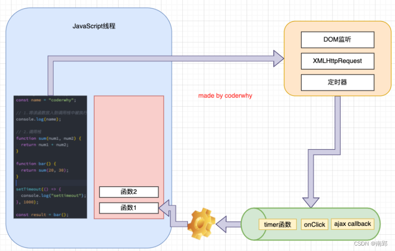
2.1 宏任务/微任务
事件循环中并非只维护着一个队列，事实上是有两个队列：
- 宏任务队列（macrotask queue）：ajax、setTimeout、setInterval、DOM监听、UI Rendering等
- 微任务队列（microtask queue）：Promise的then回调、 Mutation Observer API、queueMicrotask()等
执行顺序：
- main script中的代码优先执行（编写的顶层script代码）
- 在执行任何一个宏任务之前（不是队列，是一个宏任务），都会先查看微任务队列中是否有任务需要执行
- 也就是宏任务执行之前，必须保证微任务队列是空的；
- 如果不为空，那么就优先执行微任务队列中的任务（回调）
2.2 面试题：Promise/async/await
面试题一
console.log("script start")
setTimeout(function () {
console.log("setTimeout1");
new Promise(function (resolve) {
resolve();
}).then(function () {
new Promise(function (resolve) {
resolve();
}).then(function () {
console.log("then4");
});
console.log("then2");
});
});
new Promise(function (resolve) {
console.log("promise1");
resolve();
}).then(function () {
console.log("then1");
});
setTimeout(function () {
console.log("setTimeout2");
});
console.log(2);
queueMicrotask(() => {
console.log("queueMicrotask1")
});
new Promise(function (resolve) {
resolve();
}).then(function () {
console.log("then3");
});
console.log("script end")
/* 结果：
script start
promise1
2
script end
then1
queueMicrotask1
then3
setTimeout1
then2
then4
setTimeout2 */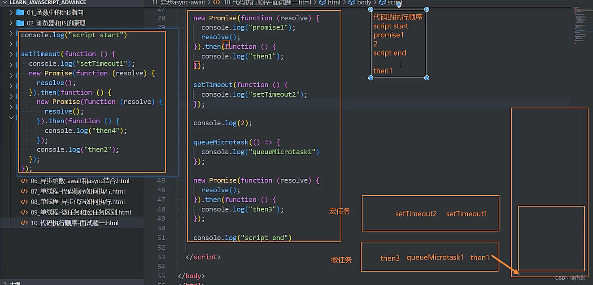
面试题二
console.log("script start")
function requestData(url) {
console.log("requestData")
return new Promise((resolve) => {
setTimeout(() => {
console.log("setTimeout")
resolve(url)
}, 2000);
})
}
// await/async
async function getData() {
console.log("getData start") //和普通函数一样立即执行
const res = await requestData("why") // 需要等待requestData()返回结果才执行函数中剩下的部分
console.log("then1-res:", res)
console.log("getData end")
}
getData()
console.log("script end")
/* 结果：
script start
getData start
requestData
//setTimeout()需要等两秒，因此此时还不能加入队列中，先往后执行
script end
setTimeout
//resolve(url)调用时，将29-31行代码加入微任务，相当于then(...代码)
then1-res: why
getData end */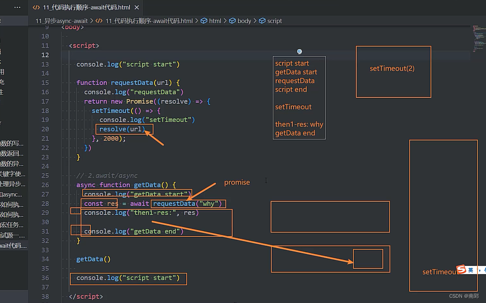
面试题三
async function async1() {
console.log('async1 start')
await async2();
console.log('async1 end') // 这部分代码相当于then(undefined => {console.log('async1 end')}),会加入微任务
}
async function async2() {
console.log('async2')
} // return undefined --> return Promise.resolve(undefined)
console.log('script start')
setTimeout(function () {
console.log('setTimeout')
}, 0)
async1();
new Promise(function (resolve) {
console.log('promise1')
resolve();
}).then(function () {
console.log('promise2')
})
console.log('script end')
/* 结果：
script start
async1 start
async2
promise1
script end
async1 end
promise2
setTimeout */五、其他知识补充
1. 异常处理
很多时候我们可能验证到不是希望得到的参数时，就会直接return：
- 但是return存在很大的弊端：调用者不知道是因为函数内部没有正常执行，还是执行结果就是一个undefined
- 事实上，正确的做法应该是如果没有通过某些验证，那么应该让外界知道函数内部报错了
此时通过throw关键字，抛出一个异常
1.1 throw 关键字
- throw语句用于抛出一个用户自定义的异常
- 当遇到throw语句时，当前的函数执行会被停止
throw关键字后的类型
- number/string/boolean
- 自定义对象
class HYError {
constructor(message, code) {
this.errMessage = message
this.errCode = code
}
}
function foo() {
console.log('foo function1');
throw new HYError('err', -1001)
// throw new Error('错误信息')
console.log('foo function2');
console.log('foo function3');
}
foo()1.2 Error 类型
JavaScript已经给我们提供了一个Error类，我们可以直接创建这个类的对象
Error包含三个属性：
messsage：创建Error对象时传入的messagename：Error的名称，通常和类的名称一致stack：整个Error的错误信息，包括函数的调用栈，当我们直接打印Error对象时，打印的就是stack
Error有一些自己的子类：
- RangeError：下标值越界时使用的错误类型
- SyntaxError：解析语法错误时使用的错误类型
- TypeError：出现类型错误时，使用的错误类型；
1.3 捕获异常
一个函数抛出了异常，但是我们并没有对这个异常进行处理，那么这个异常会继续传递到上一个函数调用中；
而如果到了最顶层（全局）的代码中依然没有对这个异常的处理代码，这个时候就会报错并且终止程序的运行
但是很多情况下当出现异常时，我们并不希望程序直接推出，而是希望可以正确的处理异常：
- 这个时候我们就可以使用
try catch - 如果有一些必须要执行的代码，我们可以使用
finally来执行- 注意：如果try和finally中都有返回值，那么会使用finally当中的返回值
function foo() {
console.log('foo function1');
throw new Error('错误信息')
console.log('foo function2');
console.log('foo function3');
}
function test() {
try {
foo()
} catch (error) {
console.log(error.message, error.name, error.stack);
} finally {
console.log('finally');
}
}
function bar() {
test()
}
bar()2. Storage
见 JavaScript 基础（六）笔记
封装 Cache
class Cache {
constructor(isLocal = true) {
this.storage = isLocal ? localStorage: sessionStorage
}
setCache(key, value) {
if (!value) {
throw new Error("value error: value必须有值!")
}
if (value) {
this.storage.setItem(key, JSON.stringify(value))
}
}
getCache(key) {
const result = this.storage.getItem(key)
if (result) {
return JSON.parse(result)
}
}
removeCache(key) {
this.storage.removeItem(key)
}
clear() {
this.storage.clear()
}
}
const localCache = new Cache()
const sessionCache = new Cache(false)
// 应用
localCache.setCache("sno", 111)
const userInfo = {
name: "why",
nickname: "coderwhy",
level: 100,
imgURL: "http://github.com/coderwhy.png"
}// storage本身是不能直接存储对象类型的
sessionCache.setCache("userInfo", userInfo)3. 正则表达式
正则表达式是一种字符串匹配利器，可以帮助我们搜索、获取、替代字符串
3.1 正则的创建
创建方法：
- new
- 字面量
正则表达式主要由两部分组成：模式（patterns）和修饰符（flags）
- 修饰符：
g（匹配全部的）、i（忽略大小写）、m（多行匹配）
const re1 = new RegExp('abc', 'ig')
const re1 = /abc/ig
const message = "fdabc123 faBC323 dfABC222 A2324aaBc"
// 需求: 将所有的abc(忽略大小写)换成cba
const newMessage1 = message.replaceAll(/abc/ig, 'cba')
console.log(newMessage1);
// 需求：将所有的数字删除
const newMessage2 = message.replaceAll(/\d+/ig, '')
console.log(newMessage2);3.2 正则常见的方法
| 方法 | 描述 |
|---|---|
| exec | 在字符串中执行查找匹配的 RegExp 方法，它返回一个数组（未匹配到则返回 null）。 |
| test | 在字符串中测试是否匹配的 RegExp 方法，它返回 true 或 false。 |
| match | 在字符串中执行查找匹配的 String 方法，它返回一个数组（在未匹配到时会返回 null）。 |
| matchAll | 在字符串中执行查找所有匹配的 String 方法，它返回一个迭代器（iterator）。修饰符必须加g |
| search | 在字符串中测试匹配的 String 方法，它返回匹配到的位置索引，或者在失败时返回-1。 |
| replace | 在字符串中执行查找匹配的 String 方法，并且使用替换字符串替换掉匹配到的子字符串。 |
| split | 使用正则表达式或者一个固定字符串分隔一个字符串，并将分隔后的子字符串存储到数组中的String方法。 |
输入账号: <input type="text">
<p class="tip">请输入账号</p>
const re1 = /abc/ig
const message = "fdabc123 faBC323 dfABC222 A2324aaBc"
// 1.test方法
if (re1.test(message)) {
console.log('message符合规则');
} else {
console.log('message不符合规则');
}
// 案例: 让用户输入的账号必须是aaaaa
const inputEl = document.querySelector("input")
const tipEl = document.querySelector(".tip")
inputEl.oninput = function () {
const value = inputEl.value
if (/^aaaaa$/.test(value)) {
tipEl.textContent = '符合要求'
} else {
tipEl.textContent = '不符合要求'
}
}
// 2.exec方法
const res1 = re1.exec(message)
console.log(res1);//['abc', index: 2, input: 'fdabc123 faBC323 dfABC222 A2324aaBc', groups: undefined]
// 3.match方法
const res2 = message.match(re1)
console.log(res2);//['abc', 'aBC', 'ABC', 'aBc']
// 3.matchAll方法 修饰符必须加g
const res3 = message.matchAll(re1)
console.log(res3);//RegExpStringIterator {}
for (const item of res3) {
console.log(item);
}// 多个exec的结果
// 4.split方法
const res4 = message.split(re1)
console.log(res4);
// 5.search方法
const res5 = message.search(re1)
console.log(res5); // 23.3 正则规则
3.3.1 字符类
字符类是一个特殊的符号，匹配特定集中的任何符号
| 字符 | 含义 |
|---|---|
\d（digit） |
数字：从 0 到 9 的字符。 |
\s（space） |
空格符号：包括空格，制表符 \t，换行符 \n 和其他少数稀有字符，例如 \v，\f 和 \r。 |
\w（word） |
“单字”字符：大小写字母或数字或下划线 。 |
.（点） |
点 . 是一种特殊字符类，它与 “除换行符之外的任何字符” 匹配 |
| 反向类 |
\D非数字：除\d以外的任何字符，例如字母。\S非空格符号：除\s以外的任何字符，例如字母。\W非单字字符：除\w以外的任何字符，例如非拉丁字母或空格
const message = "fdaa4 22242asfasdf2242"
const re = /\d+/ig
console.log(message.match(re))3.3.2 锚点、词边界与转义
锚点：
- 符号 ^ 匹配文本开头；
- 符号 $ 匹配文本末尾
词边界：
- 词边界
\b是一种检查，就像 ^ 和 $ 一样，它会检查字符串中的位置是否是词边界。 - 词边界测试
\b检查位置的一侧是否匹配\w
要把特殊字符作为常规字符来使用，需要对其进行转义：
- 常见的需要转义的字符：
[] \ / ^ $ . | ? * + ( )
// 锚点
const message = "My name is WHY."
if (/why\.$/i.test(message)) {
console.log("以why结尾")
}
// 词边界的应用
const infos = "now time is 11:56, 12:00 eat food, number is 123:456"
const timeRe = /\b\d\d:\d\d\b/ig;
console.log(infos.match(timeRe));
// 获取到.js/.jsx的文件名
const fileNames = ["abc.html", "Home.jsx", "index.html", "index.js", "util.js", "format.js"]
const jsfileRe = /\.jsx?$/
const newFileNames = fileNames.filter(filename => jsfileRe.test(filename))
console.log(newFileNames);3.3.3 集合和范围
集合（Sets）
- 比如说，
[eao]意味着查找在 3 个字符 ‘a’、‘e’ 或者 ‘o’ 中的任意一个；
范围（Ranges）
- 方括号也可以包含字符范围
- 比如说，
[0-9A-F]表示两个范围：它搜索一个字符，满足数字 0 到 9 或字母 A 到 F \d—— 和[0-9]相同；\D->[^0-9]\w—— 和[a-zA-Z0-9_]相同
const phoneNum = '185025510280'
const phoneRe = /^1[3-9]\d{9}$/
console.log(phoneRe.test(phoneNum));3.3.4 量词
量词用来形容我们所需要的数量的词
数量 {n}
- 确切的位数：{5}
- 某个范围的位数：{3,5}
缩写：
+：代表“一个或多个”，相当于 {1, }?：代表“零个或一个”，相当于 {0,1}。换句话说，它使得符号变得可选；*：代表“零个或多个”，相当于 {0, }。也就是说，这个字符可以多次出现或不出现
// 案例: 字符串的html元素, 匹配出来里面所有的标签
const htmlElement = "<div><span>哈哈哈</span><h2>我是标题</h2></div>"
const tagRe = /<\/?[a-z][a-z0-9]*>/ig
const results2 = htmlElement.match(tagRe)
console.log(results2)3.3.5 贪婪和惰性
默认情况下的匹配规则是查找到匹配的内容后，会继续向后查找，一直找到最后一个匹配的内容
- 这种匹配的方式，我们称之为贪婪模式（Greedy）
懒惰模式中的量词与贪婪模式中的是相反的。
- 只要获取到对应的内容后，就不再继续向后匹配
- 我们可以在量词后面再加一个问号 ‘?’ 来启用它
const message = "我最喜欢的两本书: 《黄金时代》和《沉默的大多数》、《一只特立独行的猪》"
// 默认.+采用贪婪模式
const nameRe = /《.+》/ig
const result1 = message.match(nameRe)
console.log(result1)
// 使用惰性模式
const nameRe = /《.+?》/ig
const result1 = message.match(nameRe)
console.log(result1)3.3.6 捕获组
模式的一部分可以用括号括起来 (…)，这称为“捕获组
- 它允许将匹配的一部分作为结果数组中的单独项
- 它将括号视为一个整体
// 1.打印书名，不要《》
const message = "我最喜欢的两本书: 《黄金时代》和《沉默的大多数》、《一只特立独行的猪》"
const nameRe = /《(?<why>.+?)》/ig
const iterator = message.matchAll(nameRe)
for (const item of iterator) {
console.log(item[1]);
}
// 2.将捕获组作为整体
const info = "dfabcabcfabcdfdabcabcabcljll;jk;j"
const abcRe = /(abc){2,}/ig
console.log(info.match(abcRe));// ['abcabc', 'abcabcabc']捕获组的补充：
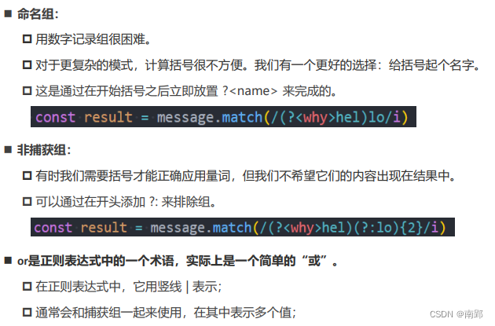
3.4 练习案例
3.4.1 歌词解析(重要)
const lyricString = "[00:00.000] 作词 : 许嵩\n[00:01.000] 作曲 : 许嵩\n[00:02.000] 编曲 : 许嵩\n[00:22.240]天空好想下雨\n[00:24.380]我好想住你隔壁\n[00:26.810]傻站在你家楼下\n[00:29.500]抬起头数乌云\n[00:31.160]如果场景里出现一架钢琴\n[00:33.640]我会唱歌给你听\n[00:35.900]哪怕好多盆水往下淋\n"
// 封装
function parseLyric(lyricString) {
// 1.根据\n切割字符串
const lyricLineStrings = lyricString.split('\n')
// 2.针对每一行歌词时间进行解析
const timeRe = /\[(\d{2}):(\d{2})\.(\d{2,3})\]/i
const lyricInfos = []
// [01:22.550]夏末秋凉里带一点温热有换季的颜色
for (const lineString of lyricLineStrings) {
// 1.获取时间
const result = lineString.match(timeRe)
if (!result) continue
const minuteTime = result[1] * 60 * 1000
const secondTime = result[2] * 1000
const mSecondTime = result[3].length === 3 ? result[3] * 1 : result[3] * 10
// 考虑毫秒有2位的情况[01:22.550]
const time = minuteTime + secondTime + mSecondTime
// 2.获取内容
const content = lineString.replace(timeRe, '').trim()
// 3.将对象放到数组中
lyricInfos.push({ time, content })
}
return lyricInfos
}
const lyricInfos = parseLyric(lyricString)
console.log(lyricInfos)3.4.2 时间格式化
function formatTime(timestamp, fmtString) {
// 1.将时间戳转成Date
const date = new Date(timestamp)
// // 2.获取到值
// const year = date.getFullYear()
// const month = date.getMonth() + 1
// const day = date.getDate()
// const hour = date.getHours()
// const minute = date.getMinutes()
// const second = date.getSeconds()
// // 3.创建正则
// const yearRe = /y+/
// const monthRe = /M+/
// 2.正则和值匹配起来
const dateO = {
'y+': date.getFullYear(),
'M+': date.getMonth() + 1,
"d+": date.getDate(),
"h+": date.getHours(),
"m+": date.getMinutes(),
"s+": date.getSeconds()
}
for (const key in dateO) {
if (new RegExp(key).test(fmtString)) {
const value = (dateO[key] + '').padStart(2, '0')
fmtString = fmtString.replace(new RegExp(key), value)
}
}
return fmtString
}
// 某一个商品上架时间, 活动的结束时间
const timeEl = document.querySelector(".time")
const productJSON = {
name: "iPhone",
newPrice: 4999,
oldPrice: 5999,
endTime: 1659252301637
}
timeEl.textContent = formatTime(productJSON.endTime, 'yyyy/MM/dd hh:mm:ss')六、防抖和节流
- JavaScript是事件驱动的，大量的操作会触发事件，加入到事件队列中处理。
- 而对于某些频繁的事件处理会造成性能的损耗，我们就可以通过防抖和节流来限制事件频繁的发生
1. 防抖
1.1 认识防抖函数 debounce
==过程：==
- 当事件触发时，相应的函数并不会立即触发，而是会等待一定的时间；
- 当事件密集触发时，函数的触发会被频繁的推迟；
- 只有等待了一段时间也没有事件触发，才会真正的执行响应函数
==应用场景：==
- 输入框中频繁的输入内容，搜索或者提交信息
- 频繁的点击按钮，触发某个事件
- 监听浏览器滚动事件，完成某些特定操作
- 用户缩放浏览器的resize事件
==应用案例：==
搜索联想，这些联想内容通常是保存在服务器的，所以需要一次网络请求
- 在合适的情况下发送网络请求
- 比如如果用户快速的输入一个macbook，那么只是发送一次网络请求
- 比如如果用户是输入一个m想了一会儿，这个时候m确实应该发送一次网络请求
- 也就是我们应该监听用户在某个时间，比如3000ms内，没有再次触发时间时，再发送网络请求
1.2 自定义防抖函数
<input type="text">
<script>
function hydebounce(fn, delay) {
// 1.记录上一次事件触发的timer
let timer = null
// 2.触发事件时执行的函数
const _debounce = function (...args) {
// console.log('_debounce的this,', this);// inputEl
// 2.1 如果有再次(更多次)触发事件，清除上一次的timer
if (timer) clearTimeout(timer)
// 2.2 延迟去执行对应的fn
timer = setTimeout(() => {
fn.apply(this, args)
timer = null
}, delay);
}
// 返回一个新的函数
return _debounce
}
</script>
<script>
// 1.获取input元素
const inputEl = document.querySelector("input")
// 2.防抖处理代码
let counter = 1
inputEl.oninput = hydebounce(function (e) {
console.log(`发送网络请求${counter++}:`, this.value, e)
}, 3000)
</script>优化（了解）
优化一：优化取消操作（增加取消功能）
优化二：优化立即执行效果：第一次输入时立即执行，后面每次输入触发流程结束后，重新输入都立即执行
优化三：优化返回值
<input type="text">
<button class="cancel">取消</button>
<script>
function hydebounce(fn, delay, immediate = false, resultCallback) {
// 1.记录上一次事件触发的timer
let timer = null
let isInvoke = false
// 2.触发事件时执行的函数
const _debounce = function (...args) {
return new Promise((resolve, reject) => {
try {
// 2.1 如果有再次(更多次)触发事件，清除上一次的timer
if (timer) clearTimeout(timer)
let res = undefined
if (immediate && !isInvoke) {
res = fn.apply(this, args)
if (resultCallback) resultCallback(res)
resolve(res)
isInvoke = true
return
}
// 2.2 延迟去执行对应的fn
timer = setTimeout(() => {
res = fn.apply(this, args)
if (resultCallback) resultCallback(res)
resolve(res)
timer = null
isInvoke = false // 保证延迟执行后，再次输入时可以立即执行
}, delay);
} catch {
reject(error)
}
})
}
// 3.给_debounce绑定一个取消的函数
_debounce.cancel = function () {
if (timer) clearTimeout(timer)
timer = null
isInvoke = false
}
// 返回一个新的函数
return _debounce
}
</script>
<script>
// 1.获取input元素
const inputEl = document.querySelector("input")
const cancelBtn = document.querySelector(".cancel")
// 2.防抖处理代码
let counter = 1
const debounceFn = hydebounce(function (e) {
console.log(`发送网络请求${counter++}:`, this.value, e)
}, 3000, true)
inputEl.oninput = debounceFn
cancelBtn.onclick = function () {
debounceFn.cancel()
}
// 优化返回值
const myDebounceFn = hydebounce(function (name, age, height) {
console.log("----------", name, age, height)
return "coderwhy 哈哈哈哈"
}, 1000, false)
myDebounceFn("why", 18, 1.88).then(res => {
console.log("拿到执行结果:", res) //coderwhy 哈哈哈哈
})
</script>2. 节流
2.1 认识节流函数 throttle
==过程：==
- 当事件触发时，会执行这个事件的响应函数
- 如果这个事件会被频繁触发，那么节流函数会按照一定的频率来执行函数
- 不管在这个中间有多少次触发这个事件，执行函数的频繁总是固定的
==应用场景：==
- 监听页面的滚动事件
- 鼠标移动事件
- 用户频繁点击按钮操作
- 游戏中的一些设计
==应用案例：==
搜索联想，这些联想内容通常是保存在服务器的，所以需要一次网络请求
- 监听input的输入，前后输入时间间隔超过一定时间（10s）后，对后面输入的发送请求
- 若未超过，则不发送请求。此时过一段时间输入时，若与初次时间间隔超过10s则立即执行，startTime刷新
- 发送请求的间隔只会等于或大于10s
2.2 自定义节流函数
<input type="text">
<script>
function hythrottle(fn, interval) {
let startTime = 0
const _throttle = function (...args) {
const nowTime = new Date().getTime()
const waitTime = interval - (nowTime - startTime)
if (waitTime <= 0) {
fn.apply(this, args)
startTime = nowTime
}
}
return _throttle
}
</script>
<script>
// 1.获取input元素
const inputEl = document.querySelector("input")
// 2.节流处理代码
let counter = 1
inputEl.oninput = hythrottle(function (e) {
console.log(`发送网络请求${counter++}:`, this.value, e)
}, 10000)优化（了解）
优化一：节流最后一次也可以执行
优化二：优化添加取消功能
优化三：优化返回值问题
<input type="text">
<button class="cancel">取消</button>
<script>
function hythrottle(fn, interval, leading = true, trailing = false) {
let startTime = 0
let timer = null
const _throttle = function (...args) {
return new Promise((resolve, reject) => {
try {
// 1.获取当前时间
const nowTime = new Date().getTime()
// 使函数在最开始不立即执行
if (!leading && startTime === 0) {
startTime = nowTime
}
// 2.计算需要等待的时间执行函数
const waitTime = interval - (nowTime - startTime)
if (waitTime <= 0) {
if (timer) clearTimeout(timer)
const res = fn.apply(this, args)
resolve(res)
startTime = nowTime
timer = null
return
}
// 3.使节流最后一次也可以执行
if (trailing && !timer) {
timer = setTimeout(() => {
const res = fn.apply(this, args)
resolve(res)
startTime = new Date().getTime() // 最后一次没有触发_throttle函数，无法使用nowTime
timer = null
}, waitTime);
}
} catch (error) {
reject(error)
}
})
_throttle.cancel = function() {
if (timer) clearTimeout(timer)
startTime = 0
timer = null
}
return _throttle
}
</script>
<script>
// 1.获取input元素
const inputEl = document.querySelector("input")
const cancelBtn = document.querySelector(".cancel")
// 2.节流处理代码
let counter = 1
inputEl.oninput = hythrottle(function (e) {
console.log(`发送网络请求${counter++}:`, this.value, e)
}, 1000, false, true)
// 3.获取返回值
const throttleFn = hythrottle(function(event) {
console.log(`发送网络请求${counter++}:`, this.value, event)
return "throttle return value"
}, 3000, { trailing: true })
throttleFn("aaaa").then(res => {
console.log("res:", res)
})
</script>3. underscore 库实现防抖和节流
underscore的官网： https://underscorejs.org/
里面有两个函数：
防抖函数：_debounce(fn, ms)
节流函数：_throttle(fn, ms)
<input type="text">
<script src="./js/underscore.js"></script>
<script>
// 1.获取input元素
const inputEl = document.querySelector("input")
// 2.防抖处理代码
let counter = 1
inputEl.oninput = _.debounce(function () {
console.log(`发送网络请求${counter++}:`, this.value)
}, 3000)
// 3.节流处理代码
inputEl.oninput = _.throttle(function () {
console.log(`发送网络请求${counter++}:`, this.value)
}, 3000)七、深拷贝和事件总线
1. 深拷贝
前面我们已经可以通过一种方法来实现深拷贝了：JSON.parse
- 这种深拷贝的方式其实对于函数、Symbol等是无法处理的
- 并且如果存在对象的循环引用，也会报错的
自定义深拷贝函数：
- 自定义深拷贝的基本功能
- 对Symbol的key进行处理
- 其他数据类型的值进程处理：数组、函数、Symbol、Set、Map
- 对循环引用的处理
1.1 自定义深拷贝的基本功能
function isObject(value) {
const valueType = typeof value
// null -> object
// function -> function
// object/arr -> object
return (value !== null) && (valueType === 'object' || valueType === 'function')
}
function deepCopy(originValue) {
// 如果是原始类型，直接返回
if (!isObject(originValue)) {
return originValue
}
// 如果是对象类型，需要创建对象
const newObj = {}
for (const key in originValue) {
newObj[key] = deepCopy(originValue[key])
}
}
const info = {
name: "why",
age: 18,
friend: {
name: "kobe",
address: {
name: "洛杉矶",
detail: "斯坦普斯中心"
}
}
}
const newObj = deepCopy(info)
console.log(newObj);1.2 优化（了解）
- 数组类型
- 其他类型处理
- Set
- 函数
- Symbol key
- Symbol value
- 循环引用
- WeakMap
function deepCopy(originValue, map = new WeakMap()) {
// 0.如果值是Symbol的类型
if (typeof originValue === "symbol") {
return Symbol(originValue.description)
}
// 1.如果是原始类型, 直接返回
if (!isObject(originValue)) {
return originValue
}
// 2.如果是set类型
if (originValue instanceof Set) {
const newSet = new Set()
for (const setItem of originValue) {
newSet.add(deepCopy(setItem))
}
return newSet
}
// 3.如果是函数function类型, 不需要进行深拷贝
if (typeof originValue === "function") {
return originValue
}
// 4.如果是对象类型, 才需要创建对象
if (map.get(originValue)) {
return map.get(originValue)
}
const newObj = Array.isArray(originValue) ? []: {} // 区分数组类型和对象类型
map.set(originValue, newObj)
// 遍历普通的key
for (const key in originValue) {
newObj[key] = deepCopy(originValue[key], map);
}
// 单独遍历Symbol key
const symbolKeys = Object.getOwnPropertySymbols(originValue)
for (const symbolKey of symbolKeys) {
newObj[Symbol(symbolKey.description)] = deepCopy(originValue[symbolKey], map)
}
return newObj
}
const s1 = Symbol("s1")
const s2 = Symbol("s2")
const info = {
name: "why",
age: 18,
friend: {
name: "kobe",
address: {
name: "洛杉矶",
detail: "斯坦普斯中心"
}
},
// 1.特殊类型: Set
set: new Set(['abc', 'cba', 'nba']),
// 2.特性类型: function
running: function () {
console.log('running~');
},
// 3.值的特殊类型: Symbol
symbolKey: Symbol("abc"),
// 4.key是symbol时
[s1]: "aaaa",
[s2]: "bbbb"
}
info.self = info
let newObj = deepCopy(info)
console.log(newObj)
console.log(newObj.self === newObj)2. 事件总线
自定义事件总线属于一种观察者模式，其中包括三个角色：
- 发布者（Publisher）：发出事件（Event）
- 订阅者（Subscriber）：订阅事件（Event），并且会进行响应（Handler）
- 事件总线（EventBus）：无论是发布者还是订阅者都是通过事件总线作为中台的
实现自己的事件总线：
- 事件的监听方法on
- 事件的发射方法emit
- 事件的取消监听off；
<button class="nav-btn">nav button</button>
<script>
class HYEventBus {
constructor() {
this.eventMap = {}
}
on(eventName, eventFn) {
let eventFns = this.eventMap[eventName] // 找到eventMap对象中eventName属性对应的值
if (!eventFns) {
eventFns = [] // 创建为一个数组
this.eventMap[eventName] = eventFns // 加入eventMap对象中
}
eventFns.push(eventFn)
}
off(eventName, eventFn) {
let eventFns = this.eventMap[eventName]
if (!eventFns) return
for (let i = 0; i < eventFns.length; i++) {
const fn = eventFns[i]
if (fn === eventFn) {
eventFns.splice(i, 1)
break
}
}
// 如果eventFns已经清空了
if (eventFns.length === 0) {
delete this.eventMap[eventName]
}
}
emit(eventName, ...args) {
let eventFns = this.eventMap[eventName]
if (!eventFns) return
// 遍历所有的函数，依次执行
eventFns.forEach(fn => {
fn(...args)
});
}
}
const eventBus = new HYEventBus()
// aside.vue组件中监听事件
eventBus.on('navclick', (name, age, height) => {
console.log('navclick listener 01', name, age, height);
})
const click = () => {
console.log("navclick listener 02")
}
eventBus.on("navclick", click) // 一个事件名称"navclick"可以绑定多个不同的函数
setTimeout(() => {
eventBus.off("navclick", click)
}, 5000);
// eventBus.on('asideclick', () => {
// console.log('asideclick listener');
// })
// nav.vue
const navBtnEl = document.querySelector(".nav-btn")
navBtnEl.onclick = function () {
console.log("自己监听到")
eventBus.emit("navclick", "why", 18, 1.88)
}一、服务端渲染和前后端分离
1. 服务器端渲染
早期的网页都是通过后端渲染来完成的：服务器端渲染：
- 客户端发出请求 -> 服务端接收请求并返回相应HTML文档 -> 页面刷新，客户端加载新的HTML文档；
==服务器端渲染的缺点：== - 当用户点击页面中的某个按钮向服务器发送请求时，页面本质上只是一些数据发生了变化，而此时服务器却要将重绘的整个页面再返回给浏览器加载，这显然有悖于程序员的“DRY（ Don‘t repeat yourself ）”原则
- 而且明明只是一些数据的变化却迫使服务器要返回整个HTML文档，这本身也会给网络带宽带来不必要的开销
2. 前后端分离
AJAX是“Asynchronous JavaScript And XML”的缩写(异步的JavaScript和XML)，是一种实现无页面刷新、获取服务器数据的技术。
AJAX最吸引人的就是它的“异步”特性，也就是说它可以==在不重新刷新页面的情况下**与服务器通信，交换数据，或更新页面==**。
你可以使用AJAX最主要的两个特性做下列事：
- 在不重新加载页面的情况下发送请求给服务器；
- 接受并使用从服务器发来的数据。
二、HTTP协议
1. HTTP 的介绍
HTTP是一个客户端（用户）和服务端（网站）之间请求和响应的标准。
- 通过使用网页浏览器、网络爬虫或者其它的工具，客户端发起一个HTTP请求到服务器上指定端口（默认端口为80）；
- 我们称这个客户端为用户代理程序（user agent）
- 响应的服务器上存储着一些资源，比如HTML文件和图像。
- 我们称这个响应服务器为源服务器（origin server）
我们网页中的资源通常是被放在Web资源服务器中，由浏览器自动发送HTTP请求来获取、解析、展示的。
2. HTTP 的组成
一次HTTP请求主要包括：
==请求request==
- 请求行
- 请求头
- 请求体
==响应response==
- 响应行
- 响应头
- 响应体
2.1 HTTP 版本
2.2 HTTP 请求方式
在RFC中定义了一组请求方式，来表示要对给定资源执行的操作：
- ==GET==：GET 方法请求一个指定资源的表示形式，使用 GET 的请求应该只被用于获取数据。
- ==HEAD==：HEAD 方法请求一个与 GET 请求的响应相同的响应，但没有响应体。
- 比如在准备下载一个文件前，先获取文件的大小，再决定是否进行下载；
- ==POST==：POST 方法用于将实体提交到指定的资源。
- ==PUT==：PUT 方法用请求有效载荷（payload）替换目标资源的所有当前表示；
- ==DELETE==：DELETE 方法删除指定的资源；
- ==PATCH==：PATCH 方法用于对应资源部分修改；
- ==CONNECT==：CONNECT 方法建立一个到目标资源标识的服务器的隧道，通常用在代理服务器，网页开发很少用到。
- ==TRACE==：TRACE 方法沿着到目标资源的路径执行一个消息环回测试。
在开发中使用最多的是GET、POST请求；在后续的后台管理项目中，我们也会使用PATCH、DELETE请求
2.3 HTTP 请求 header 相关
Content-type 是这次请求携带的数据的类型：
application/x-www-form-urlencoded：表示数据被编码成以 ‘&’ 分隔的键 - 值对，同时以 ‘=’ 分隔键和值application/json：表示是一个json类型text/plain：表示是文本类型application/xml：表示是xml类型multipart/form-data：表示是上传文件
Content-length：文件的大小长度
keep-alive：
- http是基于TCP协议的，但是通常在进行一次请求和响应结束后会立刻中断
- 在http1.0中，如果想要继续保持连接：
- 浏览器需要在请求头中添加 connection: keep-alive；
- 服务器需要在响应头中添加 connection:keey-alive；
- 当客户端再次放请求时，就会使用同一个连接，直接一方中断连接
- 在http1.1中，所有连接默认是 connection: keep-alive的；
- 不同的Web服务器会有不同的保持 keep-alive的时间；
- Node中默认是5s中
accept-encoding：告知服务器，客户端支持的文件==压缩==格式，比如js文件可以使用gzip编码，对应 .gz文件
accept：告知服务器，客户端可接受文件的格式类型
user-agent：客户端相关的信息
2.4 HTTP 响应状态码
Http状态码（Http Status Code）是用来表示Http响应状态的数字代码：
| 常见HTTP状态码 | 状态描述 | 信息说明 |
|---|---|---|
| 200 | OK | 客户端请求成功 |
| 201 | Created | POST请求，创建新的资源 |
| 301 | Moved Permanently | 请求资源的URL已经修改，响应中会给出新的URL |
| 400 | Bad Request | 客户端的错误，服务器无法或者不进行处理 |
| 401 | Unauthorized | 未授权的错误，必须携带请求的身份信息 |
| 403 | Forbidden | 客户端没有权限访问，被拒接 |
| 404 | Not Found | 服务器找不到请求的资源。 |
| 500 | Internal Server Error | 服务器遇到了不知道如何处理的情况。 |
| 503 | Service Unavailable | 服务器不可用，可能处理维护或者重载状态，暂时无法访问 |
三、XMLHttpRequest
1. XHR 发送请求的基本过程
第一步：创建网络请求的AJAX对象（使用XMLHttpRequest）
第二步：监听XMLHttpRequest对象状态的变化，或者监听onload事件（请求完成时触发）
第三步：配置网络请求（通过open方法）
第四步：发送send网络请求
// 1.创建XMLHttpRequest对象
const xhr = new XMLHttpRequest()
// 2.监听状态的改变(宏任务)
xhr.onreadystatechange = function () {
if (xhr.readyState !== XMLHttpRequest.DONE) return
const resJSON = JSON.parse(xhr.response)
console.log(resJSON);
}
// 3.配置请求open
// method: 请求的方式(get/post/delete/put/patch...)
// url: 请求的地址
xhr.open('get', "http://123.207.32.32:8000/home/multidata")
// 4.发送请求(浏览器帮助发送对应请求)
xhr.send()2. 事件监听
2.1 事件监听 onreadystatechange
我们在一次网络请求中看到状态发生了很多次变化，这是因为对于一次请求来说包括如下的状态：
注意（这个状态并非是HTTP的相应状态，而是记录的XMLHttpRequest对象的状态变化。）
| 值 | 状态 | 描述 |
|---|---|---|
| 0 | UNSENT | 代理被创建，但尚未调用 open() 方法。 |
| 1 | OPENED | open() 方法已经被调用。 |
| 2 | HEADERS_RECEIVED | send() 方法已经被调用，并且头部和状态已经可获得。 |
| 3 | LOADING | 下载中；responseText 属性已经包含部分数据。 |
| 4 | DONE | 下载操作已完成。 |
若想发送同步请求：将open的第三个参数设置为false
const xhr = new XMLHttpRequest()
xhr.open('get', "http://123.207.32.32:8000/home/multidata", false)
xhr.send()
console.log(xhr.response)
console.log('-----------');
console.log('+++++++++++'); // 这两个输出在xhr.response打印之后再打印，不会提前打印2.2 其他事件监听
除了onreadystatechange还有其他的事件可以监听
- loadstart：请求开始。
- progress： 一个响应数据包到达，此时整个 response body 都在 response 中。
- abort：调用 xhr.abort() 取消了请求。
- error：发生连接错误，例如，域错误。不会发生诸如 404 这类的 HTTP 错误。
- load：请求成功完成。
- timeout：由于请求超时而取消了该请求（仅发生在设置了 timeout 的情况下）。
- loadend：在 load，error，timeout 或 abort 之后触发。
3. 响应阶段
3.1 响应数据和响应类型
发送了请求后，我们需要获取对应的结果：response属性
通过responseType可以设置获取数据的类型
- 如果将 responseType 的值设置为空字符串，则会使用 text 作为默认值
// 1.
const xhr = new XMLHttpRequest()
// 2.onload监听数据加载完成
xhr.onload = function () {
console.log(xhr.response)
// 早期通常服务器返回的数据是普通的文本和XML，所以我们通常会通过responseText、 responseXML来获取响应结果；之后将它们转化成JavaScript对象形式；
// console.log(xhr.responseText)
// console.log(xhr.responseXML)
}
// 3.告知xhr获取到的数据的类型
// 目前服务器基本返回的都是json数据，直接设置为json即可
xhr.responseType = "json"
// xhr.responseType = "xml"
// 4.配置网络请求
// 4.1.json类型的接口
xhr.open("get", "http://123.207.32.32:1888/01_basic/hello_json")
// 4.2.text类型的接口
xhr.open("get", "http://123.207.32.32:1888/01_basic/hello_text")
// 4.3.xml类型的接口
xhr.open("get", "http://123.207.32.32:1888/01_basic/hello_xml")
// 5.发送网络请求
xhr.send()3.2 获取响应码
获取HTTP响应的网络状态，可以通过status和statusText来获取：
const xhr = new XMLHttpRequest()
// onload监听数据加载完成
xhr.onload = function () {
if (xhr.status >= 200 && xhr.status < 300) {
console.log(xhr.response);
} else {
console.log(xhr.status, xhr.statusText);
}
}
xhr.responseType = "json"
// xhr.open("get", "http://123.207.32.32:8000/home/multidata")
xhr.open("get", "http://123.207.32.32:8000/aaa/bbb")
xhr.send()4. 服务器传递参数
常见的传递给服务器数据的方式有如下几种：
- 方式一: GET请求的query参数
- 方式二: POST请求 x-www-form-urlencoded 格式
- 方式三: POST请求 FormData 格式
- 方式四: POST请求 JSON 格式
<form class="info">
<input type="text" name="username">
<input type="password" name="password">
</form>
<button class="send">发送请求</button>
<script>
const formEl = document.querySelector(".info")
const sendBtn = document.querySelector(".send")
sendBtn.onclick = function() {
// 创建xhr对象
const xhr = new XMLHttpRequest()
// 监听数据响应
xhr.onload = function() {
console.log(xhr.response)
}
// 配置请求
xhr.responseType = "json"
// 1.传递参数方式一: get -> query
xhr.open("get", "http://123.207.32.32:1888/02_param/get?name=why&age=18&address=广州市")
// 2.传递参数方式二: post -> urlencoded
xhr.open("post", "http://123.207.32.32:1888/02_param/posturl")
// 发送请求(请求体body)
xhr.setRequestHeader("Content-type", "application/x-www-form-urlencoded")
xhr.send("name=why&age=18&address=广州市")
// 3.传递参数方式三: post -> formdata
// 发送参数默认是FormData格式，所以不用声明Content-type
xhr.open("post", "http://123.207.32.32:1888/02_param/postform")
// formElement对象转成FormData对象
const formData = new FormData(formEl)
xhr.send(formData)
// 4.传递参数方式四: post -> json
xhr.open("post", "http://123.207.32.32:1888/02_param/postjson")
xhr.setRequestHeader("Content-type", "application/json")
xhr.send(JSON.stringify({name: "why", age: 18, height: 1.88}))
}
</script>5. ajax 的封装
function hyajax({
url,
method = "get",
data = {},
timeout = 10000,
headers = {}, // token
} = {}) {
// 1.创建对象
const xhr = new XMLHttpRequest()
// 2.创建Promise
const promise = new Promise((resolve, reject) => {
// 2.监听数据
xhr.onload = function() {
if (xhr.status >= 200 && xhr.status < 300) {
resolve(xhr.response)
} else {
reject({ status: xhr.status, message: xhr.statusText })
}
}
// 3.设置类型
xhr.responseType = "json"
xhr.timeout = timeout
// 4.open方法
if (method.toUpperCase() === "GET") {
const queryStrings = []
for (const key in data) {
queryStrings.push(`${key}=${data[key]}`)
}
url = url + "?" + queryStrings.join("&")
xhr.open(method, url)
xhr.send()
} else {
xhr.open(method, url)
xhr.setRequestHeader("Content-type", "application/json")
xhr.send(JSON.stringify(data))
}
})
promise.xhr = xhr
return promise
}
const promise = hyajax({
url: "http://123.207.32.32:1888/02_param/get",
data: {
username: "coderwhy",
password: "123456"
}
})
promise.then(res => {
console.log("res:", res)
}).catch(err => {
console.log("err:", err)
})6. 延迟时间 timeout 和取消请求
在网络请求的过程中，为了避免过长的时间服务器无法返回数据，通常我们会为请求设置一个超时时间：timeout。
- 当达到超时时间后依然没有获取到数据，那么这个请求会自动被取消掉
- 默认值为0，表示没有设置超时时间
我们也可以通过abort方法强制取消请求
<button>取消请求</button>
<script>
const xhr = new XMLHttpRequest()
xhr.onload = function () {
console.log(xhr.response)
}
xhr.responseType = "json"
// 1.超时时间的设置
xhr.ontimeout = function () {
console.log("请求过期: timeout")
}
// timeout: 浏览器达到过期时间还没有获取到对应的结果时, 取消本次请求
xhr.timeout = 3000
xhr.open("get", "http://123.207.32.32:1888/01_basic/timeout")
xhr.send()
// 2.手动取消结果
xhr.onabort = function () {
console.log("请求被取消");
}
const cancelBtn = document.querySelector("button")
cancelBtn.onclick = function () {
xhr.abort()
}
</script>四、Fetch
1. Fetch 基本使用
Fetch可以看做是早期的XMLHttpRequest的替代方案，它提供了一种更加现代的处理方案：
- 比如返回值是一个Promise，提供了一种更加优雅的处理结果方式
- 在请求发送成功时，调用resolve回调then；
- 在请求发送失败时，调用reject回调catch
- 不像XMLHttpRequest一样，所有的操作都在一个对象上
fetch函数的使用：
fetch(input, {method, headers, body})- input：定义要获取的资源地址，可以是一个URL字符串，也可以使用一个Request对象（实验性特性）类型
- init：其他初始化参数
- method: 请求使用的方法，如 GET、POST
- headers: 请求的头信息
- body: 请求的 body 信息
2. Fetch 数据的响应
Fetch的数据响应主要分为==两个阶段==：
阶段一：当服务器返回了响应（response）
- fetch 返回的 promise 就使用内建的 Response class 对象来对响应头进行解析；
- 在这个阶段，我们可以通过检查响应头，来检查 HTTP 状态以确定请求是否成功；
- 如果 fetch 无法建立一个 HTTP 请求，例如网络问题，亦或是请求的网址不存在，那么 promise 就会 reject；
- 异常的 HTTP 状态，例如 404 或 500，不会导致出现 error
我们可以在 response 的属性中看到 HTTP 状态： - status：HTTP 状态码，例如 200
- ok：布尔值，如果 HTTP 状态码为 200-299，则为 true
第二阶段，为了获取 response body，我们需要使用一个其他的方法调用。
- response.text() —— 读取 response，并以文本形式返回 response
- response.json() —— 将 response 解析为 JSON
3. Fetch GET/POST 请求
// 1.fetch发送get请求
// 1.1.未优化的代码
fetch("http://123.207.32.32:8000/home/multidata").then(res => {
// 1.获取到response
const response = res
// 2.获取具体的结果
response.json().then(res => {
console.log("res:", res)
})
}).catch(err => {
console.log("err:", err)
})
// 1.2. 优化方式一:
fetch("http://123.207.32.32:8000/home/multidata").then(res => {
// 1.获取到response
const response = res
// 2.获取具体的结果
return response.json()
}).then(res => {
console.log("res:", res)
}).catch(err => {
console.log("err:", err)
})
// 1.3. 优化方式二:
async function getData() {
const response = await fetch("http://123.207.32.32:8000/home/multidata")
const res = await response.json()
console.log("res:", res)
}
getData()// 2.post请求并且有参数
async function getData() {
// 1.常用内容传递
const response = await fetch("http://123.207.32.32:1888/02_param/postjson", {
method: "post",
headers: {
"Content-type": "application/json"
},
body: JSON.stringify({
name: "why",
age: 18
})
})
// 2.formData类型内容传递
const formData = new FormData()
formData.append("name", "why")
formData.append("age", 18)
const response = await fetch("http://123.207.32.32:1888/02_param/postform", {
method: "post",
body: formData
})
// 获取response状态
console.log(response.ok, response.status, response.statusText)
const res = await response.json()
console.log("res:", res)
}
getData()4. 文件上传
4.1 XMLHttpRequest 的文件上传
<input class="file" type="file">
<button class="upload">上传文件</button>
<script>
const uploadBtn = document.querySelector(".upload")
const fileEl = document.querySelector(".file")
uploadBtn.onclick = function () {
// 1.创建对象
const xhr = new XMLHttpRequest()
// 2.监听结果
xhr.onload = function () {
console.log(xhr.response)
}
xhr.onprogress = function (event) {
console.log(event)
}
xhr.responseType = "json"
xhr.open("post", "http://123.207.32.32:1888/02_param/upload")
//表单
const file = fileEl.files[0]
const formdata = new FormData()
formdata.append('avatar', file)
xhr.send(formdata)
}
</script>4.2 Fetch 的文件上传
<input class="file" type="file">
<button class="upload">上传文件</button>
<script>
const uploadBtn = document.querySelector(".upload")
const fileEl = document.querySelector(".file")
uploadBtn.onclick = async function() {
// 表单
const file = fileEl.files[0]
const formData = new FormData()
formData.append("avatar", file)
// 发送fetch请求
const response = await fetch("http://123.207.32.32:1888/02_param/upload", {
method: "post",
body: formData
})
const res = await response.json()
console.log("res:", res)
}
</script>